Les 3 étapes d'une synthèse
- Étape 1 — Transformation des réactifs en produits. C'est l'objet principal de cette séquence : obtenir un rendement maximum en un temps le plus court possible.
- Étape 2 — Extraction / purification : isolement du produit synthétisé, séparé des autres espèces présentes dans le milieu (réactifs en excès, solvant, sous-produits, catalyseur…) pour obtenir un produit brut.
- Étape 3 — Identification : contrôle de la pureté du produit obtenu.
a. Cas d'un produit solide
- Filtration sous vide, avec un montage Büchner (trompe à eau + fiole à vide).
- Lavage avec un solvant glacé (toujours sous Büchner), pour limiter la perte par re-dissolution.
- Séchage du solide obtenu.


b. Cas d'un produit liquide
- Extraction liquide-liquide (extraction par solvant) : on utilise un solvant extracteur, non miscible avec le solvant initial, dans lequel l'espèce à extraire est plus soluble. Les deux phases sont séparées à l'aide d'une ampoule à décanter. Ce solvant doit être volatil pour être éliminé facilement ensuite.
- Séchage : élimination des traces d'eau à l'aide d'un solide anhydre.
- Élimination du solvant par vaporisation (évaporateur rotatif).


Identification d'une espèce chimique
Pour identifier une espèce chimique, on mesure l'une de ses caractéristiques physiques et on la compare aux valeurs de tables de données. Les méthodes dépendent de l'état physique du produit :
- Solide : mesure de la température de fusion avec un banc Kofler.
- Liquide : mesure de la densité, de la température d'ébullition, de l'indice de réfraction.
- Solide ou liquide : les méthodes chromatographiques et spectroscopiques conviennent aux deux états.
Définition du rendement
Le rendement r d'une synthèse est le quotient entre la quantité de matière finale nf de produit obtenu et la quantité maximale nmax qu'on peut produire à partir des réactifs en présence (en supposant la réaction totale).
① Réactif en excès
Introduire un réactif en excès déplace l'équilibre chimique dans le sens direct : le réactif limitant est davantage consommé, ce qui augmente nf et donc r.
② Élimination d'un produit
Si on élimine un produit au fur et à mesure de sa formation (distillation par exemple), sa quantité de matière dans le milieu reste nulle : le quotient de réaction Qr reste strictement inférieur à K. La réaction est forcée dans le sens direct jusqu'à disparition complète du réactif limitant : la réaction devient totale, r = 1.

⚗️ Animation 1 — Ajout d'un réactif
PCCL · Observer le déplacement de l'équilibre lorsqu'on ajoute un excès d'alcool ou d'acide.
⚗️ Animation 2 — Élimination d'un produit
PCCL · Observer le déplacement de l'équilibre lorsqu'on élimine l'ester formé.
Ces deux animations illustrent donc les deux mêmes leviers vus en cours pour augmenter le rendement d'une synthèse : l'excès d'un réactif, et l'élimination d'un produit.
Les facteurs cinétiques
Pour augmenter la vitesse de formation d'un produit dans une étape de synthèse, il est possible d'agir sur les facteurs cinétiques : la concentration des réactifs et la température, et/ou d'utiliser un catalyseur.
- Chauffer a un coût énergétique et environnemental important.
- Un catalyseur est régénéré : son coût d'utilisation est nul.
L'agitation
L'agitation (agitateur magnétique) homogénéise la solution et aide à solubiliser les réactifs : elle accélère donc la réaction en favorisant les contacts entre entités réactives.
Le montage à reflux
Le montage à reflux permet d'augmenter la température du milieu sans perte de matière par évaporation. La réaction se déroule à la température d'ébullition du solvant, ce qui entraîne la vaporisation d'une partie des réactifs. Les vapeurs se liquéfient au contact des parois froides du réfrigérant et retombent en gouttelettes dans le milieu réactionnel : il faut récupérer ces vapeurs pour ne pas perdre en rendement. Des grains de pierre ponce régulent l'ébullition.

Protocole expérimental
- Dans un ballon bicol, introduire 0,20 mol d'acide éthanoïque et 0,24 mol d'alcool isoamylique (léger excès par rapport à l'acide).
- Ajouter avec précaution quelques gouttes d'acide sulfurique concentré.
- Ajouter quelques grains de pierre ponce, puis adapter un montage à reflux muni d'un Dean-Stark permettant d'éliminer l'eau formée au fur et à mesure de sa formation.
- Chauffer à reflux pendant 45 minutes sous agitation magnétique.
- Laisser refroidir le mélange réactionnel à température ambiante.
- Verser le mélange dans une ampoule à décanter contenant de l'eau glacée, agiter puis laisser décanter.
- Récupérer la phase organique, la laver avec une solution saturée d'hydrogénocarbonate de sodium puis à l'eau distillée.
- Sécher la phase organique sur sulfate de magnésium anhydre, puis filtrer.
À retenir : seules les opérations qui agissent sur la transformation chimique elle-même (étape 1 de la synthèse) optimisent le rendement ou la vitesse. Les opérations d'extraction, de purification et de sécurité (étapes 2 et 3 d'une synthèse, cf. partie A.1) n'ont pas cet effet.
Mécanisme réactionnel et intermédiaire réactionnel
Une réaction complexe peut être décomposée au niveau moléculaire en étapes (ou actes) élémentaires : l'ensemble de ces étapes constitue le mécanisme réactionnel. Il permet notamment de rendre compte de la loi de vitesse établie expérimentalement.
Un intermédiaire réactionnel est une espèce chimique formée au cours d'une étape élémentaire, puis consommée au cours d'une étape ultérieure.
Établir l'équation de la réaction à partir du mécanisme
L'équation de la réaction modélisée par un mécanisme réactionnel s'obtient en faisant le bilan de tout ce qui est consommé et produit au cours des différentes étapes : on l'écrit en additionnant les étapes du mécanisme (les intermédiaires réactionnels et le catalyseur régénéré s'éliminent de part et d'autre).
Sites donneur et accepteur de doublet d'électrons
- Un site donneur de doublet d'électrons est un site de forte densité électronique, portant une charge partielle δ− (ou une charge négative, ou un doublet non liant).
- Un site accepteur de doublet d'électrons est un site de faible densité électronique, portant une charge partielle δ+ (ou une charge positive).
On modélise le déplacement d'un doublet d'électrons lors d'une étape d'un mécanisme réactionnel par une flèche courbe qui part d'un site donneur de doublet d'électrons et qui pointe vers un site accepteur de doublet d'électrons.


① Bromation d'un alcène — addition électrophile
Équation générale : C=C + Br2 → C(Br)–C(Br)
Mécanisme en 2 étapes :
- Étape 1 — le doublet π de la double liaison C=C (site donneur) attaque l'atome de brome le plus proche de Br2 (site accepteur) ; le doublet de la liaison Br–Br part vers l'autre atome de brome, qui devient l'ion bromure Br−. Il se forme un ion bromonium (intermédiaire réactionnel, cycle à 3 atomes chargé positivement).
- Étape 2 — l'ion bromure Br− formé (site donneur, doublet non liant) attaque l'un des carbones de l'ion bromonium (site accepteur), ce qui rouvre le cycle et donne le dérivé dibromé.
② Hydratation d'un alcène en milieu acide — addition électrophile
Équation générale : C=C + H2O →(H3O+) C(H)–C(OH)

Mécanisme en 3 étapes :


▶ Voir l'animation étape par étape (Ostralo)

③ Synthèse d'un éther en milieu basique — substitution nucléophile (type Williamson)
Équation générale : R–O− + R'–X → R–O–R' + X−
Mécanisme en 1 étape (réaction élémentaire) :
- Un doublet non liant de l'ion alcoolate R–O− (site donneur) attaque le carbone porteur de l'halogène de l'halogénoalcane R'–X (site accepteur, δ+) ; simultanément, le doublet de la liaison C–X part vers l'atome X, qui devient l'ion halogénure sortant X−.
- Cette réaction ne fait pas apparaître d'intermédiaire réactionnel : les deux mouvements de doublets sont simultanés (mécanisme concerté).
Étape 2 : carbocation + H2O → alcool protoné (oxonium)
Étape 3 : alcool protoné + H2O → alcool + H3O+
Choc efficace
Un choc entre deux entités réactives est dit efficace s'il entraîne une modification des liaisons chimiques de ces deux entités (formation et/ou rupture de liaisons).
🌡️ Effet de la température
Lorsque la température augmente, l'agitation thermique des entités augmente : les chocs entre entités des réactifs sont plus fréquents et plus violents. Par conséquent, les chocs efficaces sont plus fréquents.
🧪 Effet de la concentration
Lorsque la concentration des réactifs augmente, il y a plus d'entités par unité de volume : les chocs entre entités des réactifs sont plus fréquents. Par conséquent, les chocs efficaces sont plus fréquents.
Une séquence réactionnelle
Une séquence réactionnelle (ou synthèse multi-étapes) est une suite de réactions chimiques permettant la synthèse d'une molécule cible à partir de réactifs. Chaque étape peut inclure une modification de groupe caractéristique, de chaîne carbonée, ou une polymérisation. On peut aussi classer chaque étape selon le type de transformation subie par la molécule.
Caractériser une transformation
Une transformation chimique peut être caractérisée soit par le couple mis en jeu (oxydoréduction, acide-base), soit par la comparaison du nombre de liaisons simples entre le substrat et le produit (addition, élimination), soit par le devenir d'un atome ou groupe d'atomes (substitution).
Oxydoréduction
Couple oxydant1/réducteur1 : transformation de l'oxydant 1 en réducteur 1 (ou du réducteur 1 en oxydant 1).
Acide-base
Couple acide1/base1 : transformation de l'acide 1 en base 1 (ou de la base 1 en acide 1).
Addition
Un ou des atome(s) du produit possède(nt) plus de liaisons simples que dans le substrat.
Élimination
Un ou des atome(s) du produit possède(nt) moins de liaisons simples que dans le substrat.
Substitution
Un atome ou groupe d'atomes du substrat est remplacé par un autre atome ou groupe d'atomes dans le produit.

Exercice à trous — Compléter les définitions (addition, élimination, substitution)
Une substitution est une réaction chimique au cours de laquelle un atome ou groupe d'atomes, groupe sortant, est
par un autre, groupe entrant.
Une addition est une réaction chimique au cours de laquelle deux atomes ou groupes d'atomes viennent se
sur des atomes initialement liés par une liaison multiple, sans
d'autres groupes d'atomes.
Une élimination est une réaction chimique au cours de laquelle deux atomes ou groupes d'atomes portés par des atomes voisins sont
d'une molécule sans
d'autres groupes ; il se forme alors une liaison
.
Substitution : C–X + Y → C–Y + X.
Addition : C=C + X–Y → CX–CY.
Élimination : CX–CY → C=C + X–Y.
Banque de réactions disponibles
- A. Addition électrophile d'eau sur un alcène, catalysée par H3O+ (règle de Markovnikov) → alcool secondaire
- B. Substitution nucléophile d'un ion hydroxyde sur un dérivé halogéné → alcool
- C. Oxydation ménagée d'un alcool secondaire par les ions dichromate en milieu acide → cétone
- D. Réduction d'une cétone par le borohydrure de sodium NaBH4 → alcool secondaire
- E. Estérification d'un alcool par l'acide éthanoïque, catalyse acide, chauffage à reflux → ester + eau
- F. Élimination d'eau (E1) d'un alcool en milieu acide chauffé → alcène
- G. Addition électrophile de HBr sur un alcène (règle de Markovnikov) → dérivé bromé
- H. Hydrolyse basique (saponification) d'un ester par HO− → ion carboxylate + alcool
- I. Protection sélective d'un groupe hydroxyle par estérification avec l'anhydride éthanoïque → ester protecteur
- J. Déprotection par hydrolyse acide de l'ester protecteur → groupe hydroxyle régénéré
- K. Réaction acide-base : acide carboxylique + hydrogénocarbonate de sodium → ion carboxylate + CO2 + eau
Pourquoi pas les autres réactions ?
- B nécessite un dérivé halogéné au départ, absent ici.
- D est l'inverse de l'étape recherchée (réduction, pas oxydation).
- E conduirait à un ester, pas à une cétone (voir synthèse 2).
- F est l'inverse de l'étape 1 (élimination, pas addition).
- G, H, I, J, K ne correspondent à aucune transformation utile ici (pas d'alcool à protéger, pas d'ester ni d'acide carboxylique en présence).
Le piège à éviter : l'étape 2 n'est pas C (oxydation) — l'oxydation donnerait une cétone (synthèse 1), pas un ester. Il faut bien reconnaître le groupe caractéristique de la molécule cible (ici un ester) pour choisir la bonne réaction finale.
Sans l'étape de protection, l'oxydation (C) aurait transformé les deux groupes hydroxyle en groupes carbonyle, ce qui n'est pas le produit recherché.
Polymère, monomère et motif
Un polymère est une macromolécule formée de l'assemblage de motifs chimiques identiques liés en chaîne. Il est le résultat de la polymérisation de molécules monomères. On représente un polymère en écrivant le motif entre deux crochets ou parenthèses, en notant en indice le nombre N (ou n) de répétitions du motif.


Application — Polymère de degré 4 du 2-méthylprop-1-ène
Le 2-méthylprop-1-ène a pour formule semi-développée CH2=C(CH3)2. Représenter le motif de son polymère, puis le polymère de degré 4 (N = 4).
Motif (obtenu en ouvrant la liaison double C=C, chaque carbone gardant ses substituants) : –[CH2–C(CH3)2]–
Polymère de degré 4 (N = 4) : on répète 4 fois ce motif relié bout à bout :
–CH2–C(CH3)2–CH2–C(CH3)2–CH2–C(CH3)2–CH2–C(CH3)2–
On peut aussi le noter, de façon condensée : –[CH2–C(CH3)2]4–
L'image représente 5 motifs pour illustrer la répétition, mais dans le polymère réel, ce nombre n (degré de polymérisation) est bien plus grand — de l'ordre de plusieurs milliers.
Composé polyfonctionnel
Un composé polyfonctionnel porte plusieurs groupes caractéristiques qui peuvent réagir simultanément avec un même réactif.
Stratégie de protection / déprotection
Pour privilégier la réaction de l'une des fonctions d'un composé bifonctionnel, on peut choisir un réactif chimiosélectif, ou empêcher qu'un réactif non chimiosélectif réagisse sur l'autre fonction.
Une étape de protection est la création d'un groupe protecteur sur l'une des fonctions d'un composé polyfonctionnel afin de bloquer sa réactivité. Après action du réactif sur la fonction non protégée, on réalise l'étape de déprotection de la fonction. La séquence réactionnelle est donc allongée de deux étapes.
- Le groupe protecteur doit se former de façon sélective avec la fonction à protéger.
- Il doit être stable lors des étapes suivantes.
- Il doit être facile à enlever une fois la transformation terminée.
Protection, oxydation et déprotection du 3-hydroxybutanal
Pour empêcher la fonction hydroxyle du 3-hydroxybutanal d'être oxydée par les ions permanganate, on forme au préalable un groupe ester protecteur, grâce à une réaction avec l'acide éthanoïque.
① Protection
3-hydroxybutanal + acide éthanoïque → formation du groupe ester protecteur sur la fonction hydroxyle.
② Oxydation
MnO4− oxyde uniquement l'aldéhyde (non protégé) en acide carboxylique ; le groupe ester protège l'ancien hydroxyle.
③ Déprotection
Hydrolyse du groupe ester : on retrouve la fonction hydroxyle, tandis que la fonction oxydée (carboxyle) est conservée.
On obtient finalement l'acide 3-hydroxybutanoïque : seule la fonction aldéhyde a été oxydée, la fonction hydroxyle ayant été protégée puis restaurée.
Une synthèse écoresponsable
Une synthèse écoresponsable doit utiliser des procédés chimiques permettant de réduire ou d'éliminer l'utilisation et la production de substances dangereuses. Ce type de synthèse doit respecter les 12 principes de la chimie verte, énoncés par les chimistes américains Paul Anastas et John C. Warner en 1998.
- Catalyseurs — diminuent la consommation d'énergie, augmentent la sélectivité, réduisent les quantités de réactifs.
- Réactifs — doivent être les moins toxiques possible pour l'environnement.
- Solvants verts — facilement récupérables, recyclables, faiblement toxiques, tout en conservant vitesses de réaction et rendements.
| Critère | Voie A | Voie B |
|---|---|---|
| Rendement | 68 % | 91 % |
| Solvant utilisé | dichlorométhane (toxique, CMR suspecté) | éthanol (peu toxique, biosourcé) |
| Catalyseur | aucun | acide sulfurique (catalytique, régénéré) |
| Température / durée | 110 °C pendant 6 h | 78 °C (reflux) pendant 1 h |
| Nombre d'étapes | 4 (dont 1 protection/déprotection) | 2 |
| Sous-produits | non valorisés, rejetés | eau uniquement |
La voie A n'est pas nécessairement à écarter dans l'absolu (elle peut être choisie pour d'autres raisons, ex. disponibilité des réactifs), mais du point de vue strict de la chimie verte, la voie B est clairement préférable.
Activité 1 : Plusieurs scénarios pour une transformation
Écrire l'équation d'une réaction serait comme ne connaître d'une pièce de théâtre que la scène d'ouverture et la scène finale : que s'est-il passé entre ces deux scènes ? Quels personnages se sont rencontrés ? séparés ? associés ?
Comment décrire le « scénario » de la transformation chimique conduisant des réactifs aux produits ?
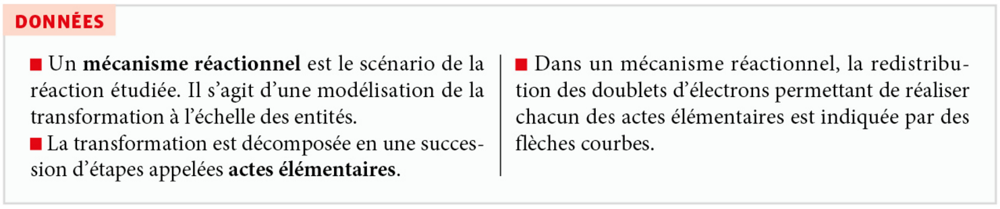
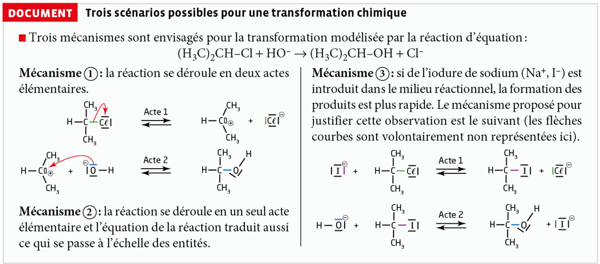
1. S'approprier
a. Commenter les deux actes élémentaires du mécanisme ① en termes de liaisons rompues ou formées.
b. Identifier le point commun entre les points de départ des deux flèches courbes représentées ici.
2. Réaliser
a. Sur le modèle du mécanisme ①, représenter les mécanismes ② et ③ en y indiquant les flèches courbes modélisant la redistribution des doublets.
b. Montrer que l'équation de la réaction est retrouvée pour chacun des mécanismes ② et ③ en faisant une combinaison des différents actes.
3. Analyser-raisonner
a. Identifier dans les mécanismes ① et ③ deux espèces qui ne figurent ni parmi les réactifs, ni parmi les produits de la transformation.
b. Parmi ces deux espèces, identifier celle qui joue le rôle de catalyseur, après avoir rappelé sa définition.
c. La seconde espèce est appelée « intermédiaire réactionnel ». Proposer une justification de ce terme.
4. Valider
Choisir l'un des mécanismes ① ou ③ et commenter à l'aide du vocabulaire utilisé au théâtre : scène d'ouverture, scène finale, intrigue, personnages, didascalies.
1a. Acte 1 : le doublet de la liaison C–Cl part entièrement sur l'atome de chlore (rupture hétérolytique), ce qui forme l'ion chlorure Cl⁻ et un carbocation (l'atome de carbone porte alors une lacune électronique, notée ⊕). Acte 2 : le doublet non liant de l'ion hydroxyde HO⁻ vient se fixer sur ce carbocation, formant la nouvelle liaison C–O de l'alcool.
1b. Dans les deux actes, la flèche part d'un doublet d'électrons disponible (le doublet de la liaison C–Cl dans l'acte 1, le doublet non liant de l'oxygène de HO⁻ dans l'acte 2) et pointe vers un atome pauvre en électrons (le chlore qui devient Cl⁻, puis le carbone chargé ⊕). Le point commun : une flèche courbe traduit toujours le déplacement d'un doublet d'électrons d'un site riche vers un site pauvre en électrons.
2a. Mécanisme ② (un seul acte) : une flèche part du doublet non liant de l'oxygène de HO⁻ et pointe vers l'atome de carbone lié à Cl ; simultanément une flèche part de la liaison C–Cl et pointe vers l'atome de chlore, qui part sous forme de Cl⁻. Les deux flèches sont représentées en même temps puisqu'il n'y a qu'un seul acte élémentaire.
Mécanisme ③ Acte 1 : une flèche part du doublet non liant de l'ion iodure I⁻ vers le carbone lié à Cl ; une flèche part de la liaison C–Cl vers Cl (formation de Cl⁻). Acte 2 : une flèche part du doublet non liant de HO⁻ vers le carbone lié à I ; une flèche part de la liaison C–I vers I (régénération de I⁻).
2b. Mécanisme ① : en additionnant l'acte 1 (RCl → R⁺ + Cl⁻) et l'acte 2 (R⁺ + HO⁻ → ROH), l'espèce R⁺ apparaît comme produit puis comme réactif : elle se simplifie. Il reste RCl + HO⁻ → ROH + Cl⁻, l'équation bilan de la transformation.
Mécanisme ③ : en additionnant l'acte 1 (RCl + I⁻ → RI + Cl⁻) et l'acte 2 (RI + HO⁻ → ROH + I⁻), les espèces RI et I⁻ apparaissent chacune comme produit d'un acte puis comme réactif de l'autre : elles se simplifient. On retrouve la même équation bilan RCl + HO⁻ → ROH + Cl⁻.
3a. Dans le mécanisme ①, le carbocation R⁺ apparaît comme produit de l'acte 1 puis est entièrement consommé comme réactif de l'acte 2 : il ne figure ni parmi les réactifs ni parmi les produits de la transformation globale. Dans le mécanisme ③, ce sont l'ion iodure I⁻ (réactif de l'acte 1, régénéré comme produit de l'acte 2) et l'espèce RI (produite à l'acte 1, consommée à l'acte 2) qui remplissent ce rôle.
3b. Un catalyseur est une espèce qui augmente la vitesse d'une réaction sans apparaître dans l'équation bilan et sans être consommée. C'est le cas de l'ion iodure I⁻ : réactif de l'acte 1, il est intégralement régénéré comme produit de l'acte 2.
3c. RI est appelé intermédiaire réactionnel car il est produit au cours d'un acte élémentaire (acte 1) puis entièrement consommé dans l'acte élémentaire suivant (acte 2) : contrairement au catalyseur, il n'est présent que de façon transitoire, à un stade intermédiaire du mécanisme, sans jamais être isolé ni régénéré en fin de parcours.
4. Par exemple pour le mécanisme ① : les réactifs (H₃C)₂CHCl et HO⁻ correspondent à la « scène d'ouverture », les produits (H₃C)₂CHOH et Cl⁻ à la « scène finale ». Le carbocation R⁺, qui n'apparaît ni au début ni à la fin mais seulement entre les deux actes, joue le rôle d'un personnage transitoire de l'intrigue, présent un court instant avant de disparaître. Les deux actes élémentaires sont les deux « scènes » successives de la pièce, et les flèches courbes en sont les didascalies : elles indiquent, comme des indications de mise en scène, comment les doublets d'électrons se déplacent d'un acte à l'autre.
Activité 2 : Les oxydes d'azote, destructeurs d'ozone du XXIe siècle
La couche d'ozone est une partie de la stratosphère contenant une quantité relativement importante d'ozone. Elle absorbe une grande partie du rayonnement solaire ultraviolet, protégeant ainsi les êtres vivants. Les oxydes d'azote (NxOy), émis dans l'atmosphère par les activités humaines, participent à la destruction de cette couche d'ozone, d'autant plus fortement si leur concentration augmente ou si la température est plus élevée.
Peut-on interpréter ces effets à l'échelle des entités chimiques ?
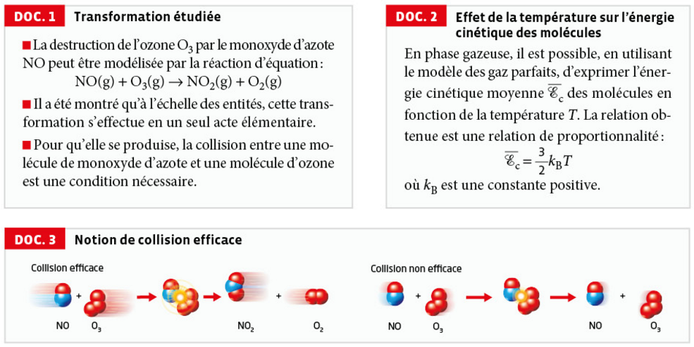
1. S'approprier
a. Rappeler la définition de l'énergie cinétique du système de masse m et de valeur de vitesse v.
b. Émettre des hypothèses sur les raisons pour lesquelles les énergies cinétiques de chaque entité d'un système chimique sont différentes.
c. La vitesse quadratique u d'un ensemble d'entités identiques est la racine carrée de la valeur moyenne du carré de la vitesse de chaque entité. Exprimer u en fonction de 𝓔c.
2. Analyser-raisonner
a. Indiquer l'effet d'une augmentation de température sur l'énergie cinétique moyenne, puis sur la vitesse quadratique.
b. Émettre une hypothèse sur l'effet d'une augmentation de température sur la fréquence des collisions entre entités dans un récipient de volume fixe qui contient des espèces gazeuses en quantité fixée.
c. Indiquer, dans les mêmes conditions, l'effet d'une augmentation de la quantité d'espèces gazeuses sur la fréquence des collisions lorsque la température est constante.
d. Expliquer comment le dessinateur a représenté sur le doc. 3 la différence entre collision efficace et collision non efficace. En déduire l'effet de la température sur l'efficacité des collisions.
3. Valider
Rédiger un court texte permettant de mettre en relation la modélisation microscopique et la modélisation macroscopique de l'évolution temporelle du système chimique, notamment pour les facteurs cinétiques température et concentration.
1a. L'énergie cinétique d'un système de masse m et de vitesse v est donnée par : Ec = ½ m v².
1b. Les entités d'un système chimique sont animées d'une agitation désordonnée (agitation thermique) et subissent en permanence des collisions les unes avec les autres. Chaque collision modifie la vitesse (direction et norme) des entités concernées : à un instant donné, toutes les entités n'ont donc pas la même vitesse, et par conséquent pas la même énergie cinétique, même si elles sont identiques et à la même température.
1c. Par définition, u² est la valeur moyenne de v², donc l'énergie cinétique moyenne s'écrit 𝓔c = ½ m u². On en déduit u = √(2𝓔c / m).
2a. D'après le doc. 2, 𝓔c = (3/2) kB T : une augmentation de température T entraîne donc une augmentation de l'énergie cinétique moyenne 𝓔c. Comme u = √(2𝓔c / m), une augmentation de 𝓔c entraîne également une augmentation de la vitesse quadratique u.
2b. Si la température augmente, les entités se déplacent plus vite (question 2a.) : à volume fixe et quantité de matière fixée, elles parcourent une plus grande distance par unité de temps, ce qui augmente la probabilité qu'elles se rencontrent. La fréquence des collisions augmente donc avec la température.
2c. À température constante (donc à vitesse moyenne inchangée), augmenter la quantité d'espèces gazeuses dans un volume fixe revient à augmenter le nombre d'entités présentes par unité de volume : les entités sont statistiquement plus proches les unes des autres, ce qui augmente la fréquence des collisions entre elles.
2d. Sur le doc. 3, la collision efficace est représentée par des entités NO et O₃ qui, au contact l'une de l'autre, se transforment directement en les produits NO₂ et O₂ (symbolisé par un éclat au point de choc). La collision non efficace montre au contraire NO et O₃ qui se percutent puis repartent inchangés, sans transformation. Une collision n'est donc efficace que si les entités qui se choquent possèdent une énergie cinétique suffisante (et une orientation favorable) au moment du choc. Puisqu'une augmentation de température augmente l'énergie cinétique moyenne des entités (question 2a.), elle augmente la proportion de collisions suffisamment énergétiques pour être efficaces.
3. À l'échelle microscopique, la transformation chimique résulte de collisions efficaces entre entités réactives. Deux facteurs cinétiques gouvernent la fréquence et l'efficacité de ces collisions : d'une part la concentration des espèces, qui, à volume fixe, augmente la fréquence des collisions lorsqu'elle augmente (question 2c.) ; d'autre part la température, qui augmente à la fois la vitesse des entités — donc la fréquence des collisions (question 2b.) — et leur énergie cinétique — donc la proportion de collisions efficaces (question 2d.). À l'échelle macroscopique, ces effets microscopiques se traduisent par une vitesse de transformation qui augmente lorsque la concentration des réactifs augmente ou lorsque la température augmente : la disparition des réactifs et la formation des produits sont alors plus rapides.
Activité 3 : Les réactifs de Grignard
En 1900, Victor Grignard mit au point une nouvelle famille d'espèces chimiques, les organomagnésiens. Il obtint pour cette découverte le prix Nobel de chimie en 1912.
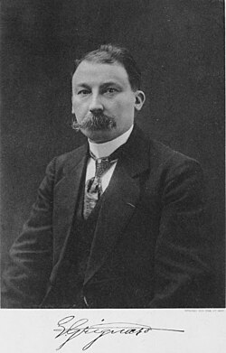
Victor Grignard (1871–1935)
Wikipédia
| H 2,20 | ||||||
|---|---|---|---|---|---|---|
| Li 0,98 | Be 1,57 | B 2,04 | C 2,55 | N 3,04 | O 3,44 | F 3,98 |
| Na 0,93 | Mg 1,31 | Al 1,61 | Si 1,90 | P 2,19 | S 2,58 | Cl 3,16 |
| K 0,82 | Ca 1,00 | Ga 1,81 | Ge 2,01 | As 2,18 | Se 2,55 | Br 2,96 |
| Rb 0,82 | Sr 0,95 | In 1,78 | Sn 1,96 | Sb 2,05 | Te 2,10 | I 2,66 |
Étape 1. CH₃I + Mg → CH₃MgI
Étape 2. CH₃MgI + RCHO → R–CH(OMgI)(CH₃)
Étape 3. R–CH(OMgI)(CH₃) + H₂O → RCH(OH)CH₃ + MgIOH
1. Analyser les documents
a. Comment l'écriture des équations de réaction a-t-elle évolué depuis le XIXe siècle ?
b. Rechercher une définition du terme « organométallique ».
c. Grignard est-il le premier à utiliser une telle combinaison en synthèse organique ? Est-il le premier à utiliser le magnésium ?
d. Quel est le groupe caractéristique des produits attendus ?
e. Citer deux arguments mettant en évidence l'efficacité de la réaction de Grignard pour obtenir ces produits.
f. Réécrire les étapes de la transformation à l'aide de formules semi-développées. À quelle catégorie de réaction (addition ; élimination ; substitution) correspond chacune de ces étapes ?
g. Identifier dans la formule de l'alcool la liaison simple carbone-carbone formée.
2. Interpréter
a. En utilisant le document 3, identifier la charge partielle portée par l'atome de carbone dans la liaison C=O de l'aldéhyde.
b. Même question pour l'atome de carbone de la liaison C–Mg de CH₃MgI.
c. Parmi ces atomes de carbone, lequel est susceptible de donner un doublet d'électrons ?
d. La mise en présence de CH₃I et de RCHO sans magnésium ne conduit pas à la formation d'une liaison C–C. Proposer une explication en considérant dans chaque cas les charges partielles des atomes de carbone qui forment la nouvelle liaison.
Activité 4 : Modification du squelette et catégories de réaction
Les composés organiques présentent un large éventail de propriétés chimiques principalement dues à la présence de groupes caractéristiques. Passer d'une molécule à une autre peut se faire en modifiant la chaîne carbonée, le groupe caractéristique, ou les deux.
Comment identifier une modification de chaîne ou de groupe caractéristique, et comment classer une réaction dans une catégorie (substitution, addition, élimination) ?
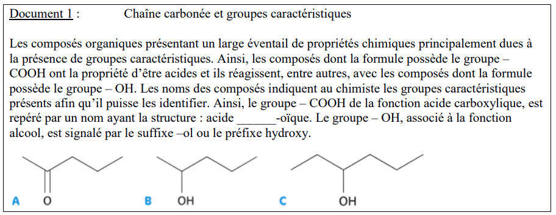
1. Doc. 1 — Chaîne et groupes caractéristiques
1. Dessiner les formules semi-développées des molécules A, B, C ; entourer les groupes caractéristiques.
2. Si la molécule A est transformée en B, est-ce une modification de chaîne ou de groupe caractéristique ? Justifier. Même question pour la transformation de B en C.
3. La molécule d'acide 4-hydroxy-hexanoïque est notée D. Dessiner la représentation topologique de D et entourer les groupes caractéristiques.
4. Cette molécule est modifiée au cours d'une réaction pour donner le 4-hydroxyhexanamide. Représenter la molécule obtenue. S'agit-il d'une modification de chaîne ou de groupe caractéristique ?
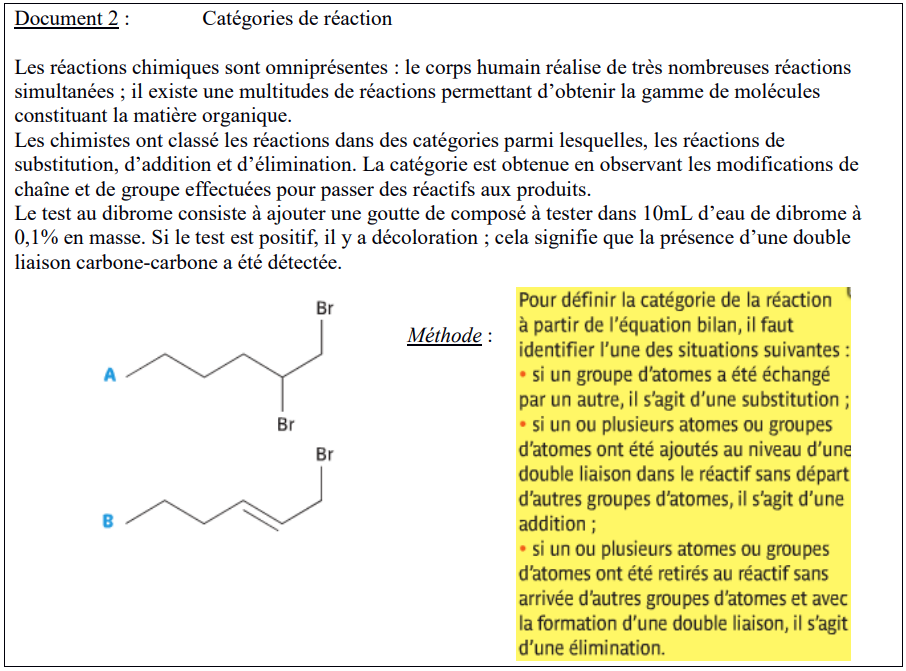
2. Doc. 2 — Catégories de réaction
1. Au cours du test au dibrome avec l'hex-1-ène, la molécule A est formée. Proposer une équation chimique pour cette réaction. De quel type de réaction s'agit-il ? Justifier la réponse.
2. Le produit de cette réaction est mis en présence d'une base ; il se forme B comme seul produit organique. Préciser la catégorie de réaction mise en jeu.
3. Dans l'eau, B se transforme en hex-2-èn-1-ol avec formation d'une molécule de bromure d'hydrogène. Écrire l'équation de la réaction en formules semi-développées et préciser à quelle catégorie cette réaction appartient.
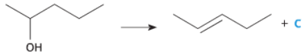
4. Il est possible d'obtenir des doubles liaisons carbone-carbone à partir de certains alcools. En équilibrant l'équation ci-dessus, identifier C. Dans quelle catégorie se range cette réaction ?
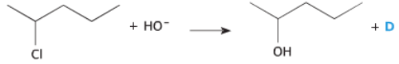
5. L'alcool utilisé dans la réaction précédente est lui-même le produit de la réaction ci-dessus. Identifier D. Dans quelle catégorie se range cette réaction ?
Doc. 1 — 1. A est le pent-2-one (H₃C–CO–CH₂–CH₂–CH₃, groupe cétone C=O entouré) ; B est le pentan-2-ol (CH₃–CH(OH)–CH₂–CH₂–CH₃, groupe –OH entouré) ; C est l'hexan-3-ol (H₃C–CH₂–CH(OH)–CH₂–CH₂–CH₃, groupe –OH entouré).
2. Les molécules A et B ont la même chaîne carbonée, celle du pentane, mais leurs groupes caractéristiques sont différents (cétone puis alcool) : la transformation de A en B est donc une modification de groupe caractéristique. Les molécules B et C ont toutes les deux un groupe –OH, mais leurs chaînes carbonées sont différentes (pentane puis hexane) : la transformation de B en C est donc une modification de chaîne carbonée.
3. L'acide 4-hydroxyhexanoïque présente la chaîne carbonée de l'hexane. Le groupe –COOH est porté par le carbone n°1 (imposé par le suffixe « -oïque ») et le groupe –OH est placé sur le carbone n°4 : HOOC–CH₂–CH₂–CH(OH)–CH₂–CH₃, avec les deux groupes caractéristiques entourés.
4. Le 4-hydroxyhexanamide a pour structure H₂N–CO–CH₂–CH₂–CH(OH)–CH₂–CH₃. Cette molécule présente la même chaîne carbonée que D, mais l'un des groupes caractéristiques est différent (–COOH devient –CONH₂) : il s'agit donc d'une modification de groupe caractéristique.
Doc. 2 — 1. La molécule de dibrome s'additionne sur la double liaison de l'hex-1-ène : CH₂=CH–CH₂–CH₂–CH₂–CH₃ + Br₂ → CH₂Br–CHBr–CH₂–CH₂–CH₂–CH₃ (molécule A). Les deux atomes de brome viennent s'ajouter de part et d'autre de la double liaison, qui disparaît, sans qu'aucun autre groupe ne parte : il s'agit donc d'une réaction d'addition.
2. La molécule B est obtenue à partir de A en retirant un atome de brome et un atome d'hydrogène portés par deux atomes de carbone voisins, avec formation d'une double liaison entre ces deux carbones : il s'agit donc d'une réaction d'élimination.
3. La transformation de B en hex-2-èn-1-ol correspond au remplacement d'un atome de brome par un groupe –OH, la double liaison C=C étant conservée : CH₃–CH₂–CH₂–CH=CH–CH₂Br → CH₃–CH₂–CH₂–CH=CH–CH₂OH + HBr. Il s'agit donc d'une réaction de substitution (plus précisément, c'est un ion bromure Br⁻ qui est remplacé par un groupe HO⁻).
4. Au cours de la réaction, il y a départ d'un groupe –OH et d'un atome d'hydrogène portés par deux atomes de carbone voisins, avec formation d'une double liaison entre ces deux carbones : C est donc identifié à H₂O. Il s'agit d'une réaction d'élimination.
5. Le bilan des atomes et des charges montre que D est l'ion chlorure Cl⁻. La réaction correspond au remplacement d'un atome de chlore par un groupe –OH : il s'agit donc d'une réaction de substitution.
Activité 5 : Synthèse d'un antimicrobien DIFFÉRENCIATION
La reutérine, produite par la bactérie Lactobacillus Reuteri, est un agent antimicrobien permettant de stopper la croissance de nombreux champignons ou bactéries nocifs.
🔴 Quelle stratégie un chimiste peut-il mettre en place pour synthétiser la reutérine ?
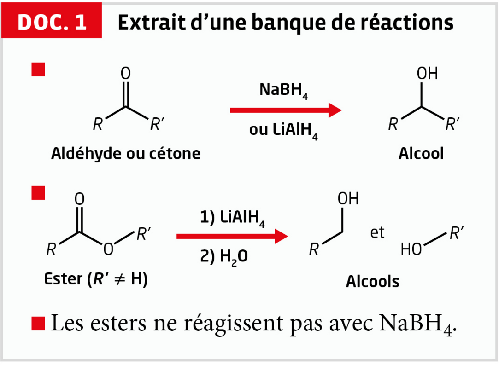
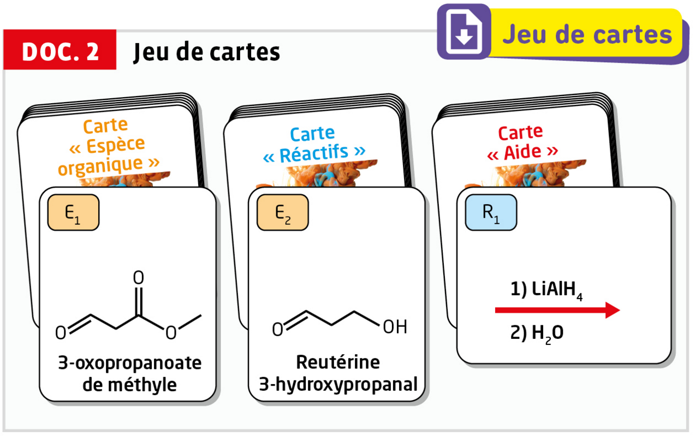
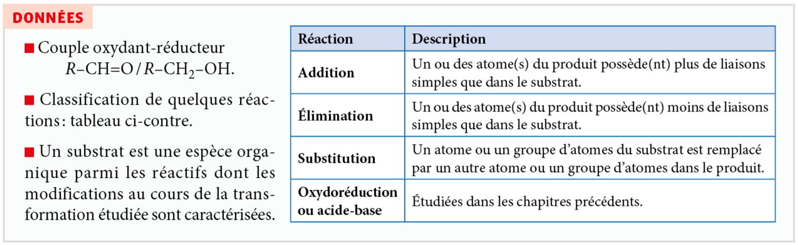
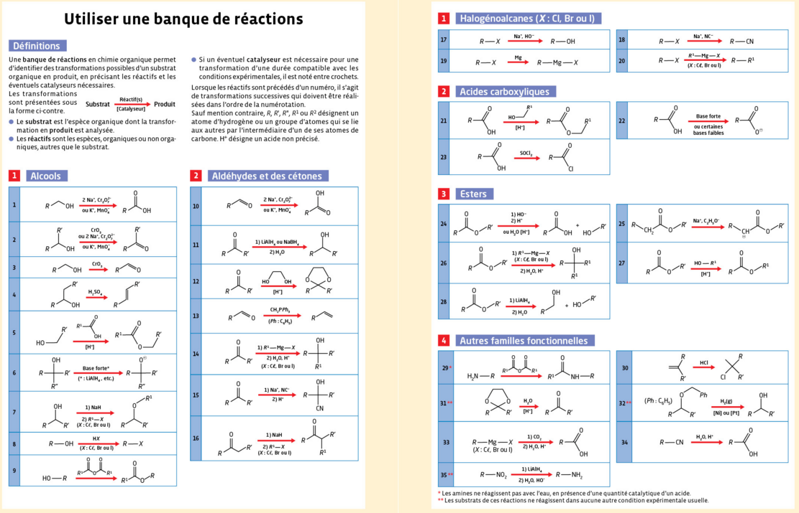
1. S'approprier — Groupes caractéristiques et familles fonctionnelles
Carte E₂ : groupes caractéristiques carbonyle et hydroxy. Familles fonctionnelles : aldéhyde et alcool.
Le groupe caractéristique qui confère à une espèce l'appartenance à la famille des esters s'appelle le groupe oxycarbonyle (contraction du groupe oxy –O– et carbonyle –C(=O)–), même si l'usage courant, non obligatoire, consiste à utiliser les termes hydroxyle et carboxyle.
2. Analyser-Raisonner
a. Compléter la transformation
Place, de gauche à droite, la carte E₁ puis la carte R₁. Fais glisser (ou touche) la carte « espèce organique » qui complète correctement la transformation.
2)H₂O→
LiAlH₄ réduit à la fois le groupe aldéhyde et le groupe ester de E₁. L'aldéhyde devient un alcool primaire, et l'ester devient également un alcool primaire — avec libération de méthanol (CH₃OH) issu du groupement –OCH₃. On obtient donc un diol (E₃) accompagné de CH₃OH.
b. Reconstituer la synthèse complète
À l'aide de la banque de réactions p.524, place les cartes manquantes (réactifs et espèces organiques) pour reformer la reutérine à partir du 3-oxopropanoate de méthyle (E₁).
Le groupe aldéhyde de E₁ réagirait avec LiAlH₄ en même temps que l'ester : il faut donc le protéger provisoirement (sous forme d'acétal cyclique) avant de réduire l'ester, puis le déprotéger en fin de synthèse pour reformer l'aldéhyde de la reutérine.
Tu peux aussi t'appuyer sur les cartes Aide :
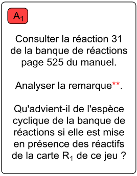
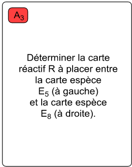
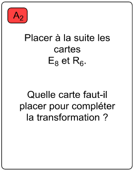
1) E₁ + R₄ (diol HO–OH, [H⁺]) → E₅ : l'aldéhyde est protégé sous forme d'acétal cyclique, l'ester n'est pas touché.
2) E₅ + R₁ (1) LiAlH₄ 2) H₂O) → E₈ : l'ester est réduit en alcool primaire ; l'acétal cyclique n'est pas modifié par LiAlH₄.
3) E₈ + R₆ ([H⁺], H₂O) → E₂ : l'acétal est hydrolysé en milieu acide, ce qui reforme l'aldéhyde — on retrouve la reutérine.
De nombreuses autres réactions sont proposées dans le jeu de cartes afin que les élèves s'approprient l'utilisation d'une banque de réactions. Cette banque ne peut pas être exhaustive de toutes les réactions existant en chimie organique : parfois, les conditions de non-réaction sont tout aussi importantes que les conditions de réaction (la réaction 31 de la banque précise bien que le groupe cyclique — l'acétal — n'est pas modifié par LiAlH₄ ; il ne peut être modifié que par la présence d'eau en milieu acide).
c. Nommer les transformations
Lors de la dernière réaction, l'atome de carbone numéro 3 possède moins de liaisons simples (2) que dans le substrat (4) : il s'agit d'une réaction d'élimination.
d. Pourquoi protéger puis déprotéger ?
Le groupe carbonyle de l'aldéhyde et le 3-oxopropanoate de méthyle sont présents dans la reutérine, mais pas dans les espèces organiques intermédiaires de la synthèse. Explique pour quelle raison il a été nécessaire de le transformer provisoirement pour le protéger, puis de le reformer en fin de synthèse.
Il peut être ici intéressant de remarquer que la banque de réactions (réaction 31) précise bien que le groupe cyclique (l'acétal) n'est pas modifié par LiAlH₄ : il ne peut être modifié que par la présence d'eau en milieu acide.
3. Communiquer 🎤 Grand Oral
La synthèse de la reutérine proposée ici fait apparaître une séquence appelée « protection-transformation-déprotection ». Prépare une présentation orale s'appuyant sur le jeu de cartes afin d'expliquer le sens de ces termes.
- 1) Protéger un premier groupe caractéristique en le transformant en un autre groupe caractéristique (appelé groupe protecteur), pour que le réactif utilisé ensuite ne le modifie pas.
- 2) Transformer le deuxième groupe caractéristique de l'espèce protégée, sans modifier le groupe protecteur.
- 3) Déprotéger en transformant en « sens opposé » le groupe protecteur en premier groupe caractéristique.
1) Protéger un premier groupe caractéristique en le transformant en un autre groupe caractéristique (appelé groupe protecteur). Pour cela, le réactif utilisé ne doit pas modifier le second groupe caractéristique.
2) Transformer le deuxième groupe caractéristique de l'espèce protégée, sans modifier le groupe protecteur.
3) Déprotéger en transformant en « sens opposé » le groupe protecteur en premier groupe caractéristique.
1. S'approprier : E₁ : carbonyle + ester → aldéhyde + ester. E₂ : carbonyle + hydroxy → aldéhyde + alcool.
2a. Carte manquante : E₁ + R₁ (LiAlH₄) → E₃ (propane-1,3-diol) + CH₃OH.
2b. Enchaînement complet : E₁ → R₄ → E₅ → R₁ → E₈ → R₆ → E₂.
2c. Types de transformation : 1ʳᵉ réaction : addition. Dernière réaction : élimination.
2d. Protection/déprotection : sans protection, LiAlH₄ réduirait aussi l'aldéhyde en alcool ; le groupe protecteur (acétal) résiste à LiAlH₄ et n'est hydrolysé qu'en milieu acide.
3. Communiquer : séquence protection → transformation → déprotection (voir détail dans la question 3).
Activité 6 : Synthèse du paracétamol
Le paracétamol est un médicament utilisé pour ses propriétés analgésiques et antipyrétiques. Cette espèce chimique est obtenue au laboratoire par réaction entre le 4-aminophénol et l'anhydride éthanoïque.
Comment synthétiser le paracétamol et confirmer sa structure ?
Comprimés de paracétamol
⚠️ L'anhydride éthanoïque et le 4-aminophénol sont corrosifs : éviter le contact avec la peau et les yeux.
- Dans un ballon bicol muni d'un réfrigérant à eau et d'une ampoule de coulée, introduire un échantillon de 4-aminophénol de masse m = 5,0 g et un barreau aimanté.
- Ajouter rapidement 15 mL d'eau, puis lentement 6,0 mL d'anhydride éthanoïque.
- Chauffer à reflux pendant 20 min.
- Laisser revenir à température ambiante grâce à un bain d'eau, puis transvaser le mélange dans un bécher. Le refroidir dans un bain de glace : le paracétamol précipite.
- Essorer le solide sous pression réduite et le laver à l'eau glacée ; essorer, puis sécher le solide sur papier-filtre.
- Mesurer sa température de fusion.
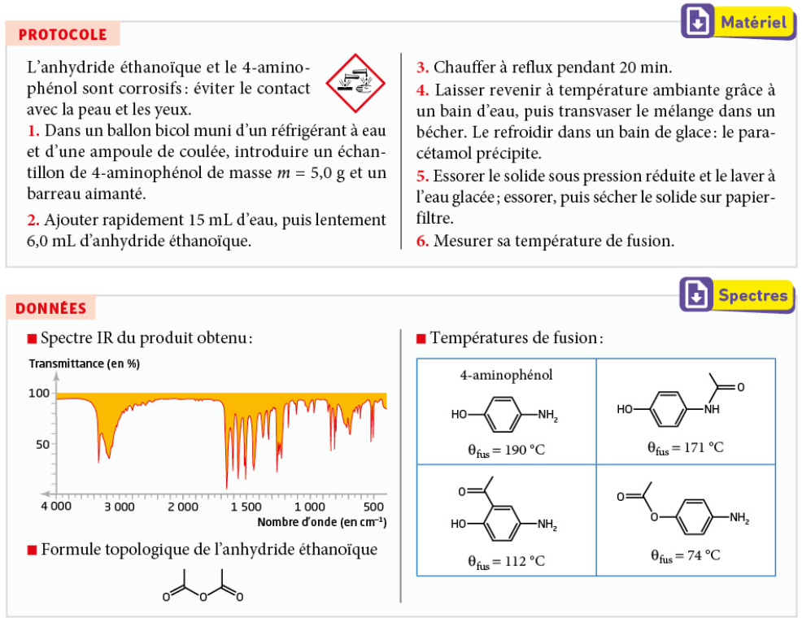
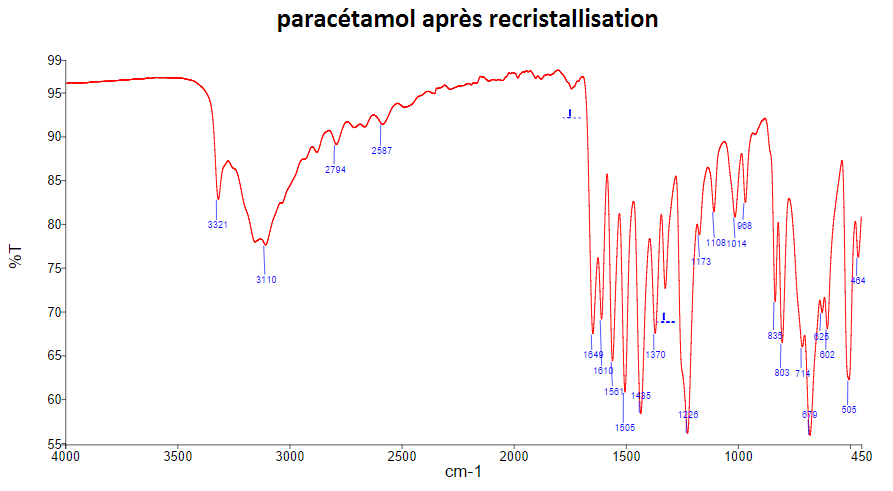
Spectre IR du paracétamol après recristallisation (produit obtenu)
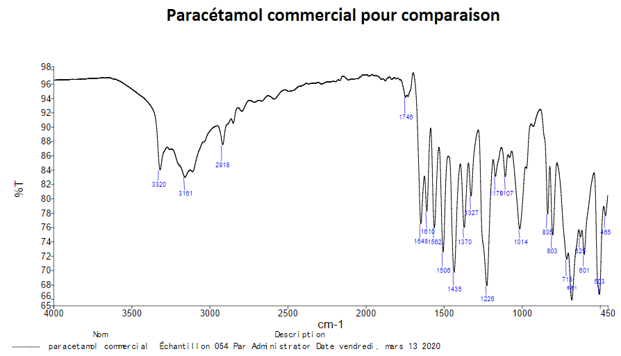
Spectre IR du paracétamol commercial (comparaison)
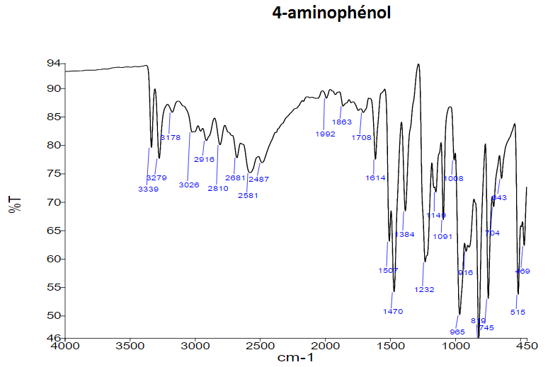
Spectre IR du 4-aminophénol
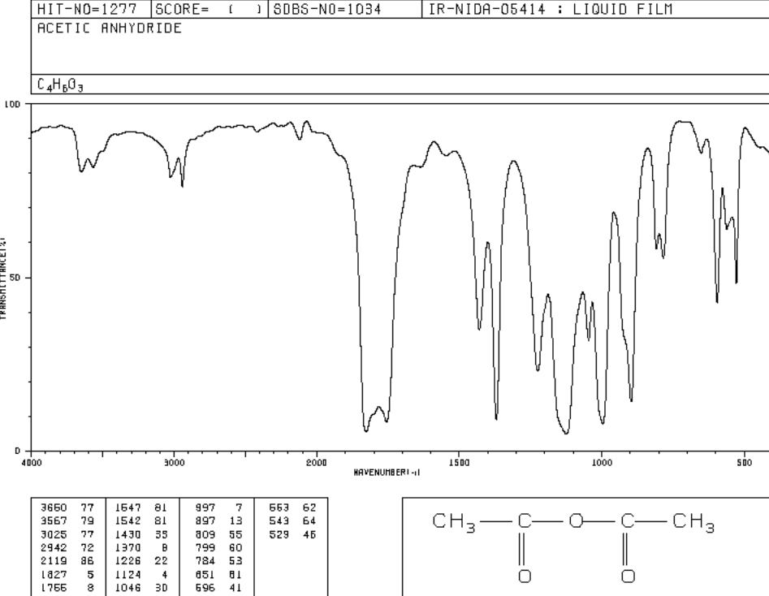
Spectre IR de l'anhydride éthanoïque (référence)
2. Analyser-Raisonner
a. Identifier les étapes de transformation du substrat, d'isolement, de purification et d'analyse.
Isolement : le refroidissement du mélange dans un bain de glace (étape 4), qui provoque la précipitation du paracétamol (solubilité plus faible à froid).
Purification : l'essorage sous pression réduite et le lavage à l'eau glacée (étape 5), qui éliminent les espèces solubles (réactif en excès, acide éthanoïque formé) sans dissoudre le solide.
Analyse : la mesure de la température de fusion (étape 6) et l'étude du spectre IR (donnée), qui permettent de vérifier la nature et la pureté du produit obtenu.
b. À partir de la banque de réactions (→ Fiche méthode 10, p. 524), proposer deux formules topologiques possibles pour le produit obtenu.
• Réaction sur l'amine → formation d'un groupe amide, avec libération d'acide éthanoïque.
• Réaction sur le groupe hydroxy (phénol) → formation d'un groupe ester, avec également libération d'acide éthanoïque.
Ces deux réactions conduisent à deux produits différents, dont les formules topologiques correspondent à deux des structures proposées dans le document Données.
3. Valider
a. La valeur mesurée par un élève est de 170 °C. À partir de cette température de fusion, identifier la formule du paracétamol.
b. Confirmer le résultat par l'étude du spectre IR du produit obtenu.
Le spectre du produit obtenu présente une bande à 3321 cm⁻¹ (liaison N–H) et une bande intense à 1649 cm⁻¹, caractéristique d'un groupe carbonyle d'amide (et non d'ester, qui apparaîtrait plutôt vers 1730–1750 cm⁻¹). Ce spectre se superpose presque exactement à celui du paracétamol commercial fourni pour comparaison (mêmes bandes à 3320, 1648, 1370, 1226, 1014 cm⁻¹ notamment), ce qui confirme que le produit obtenu est bien le paracétamol.
c. Déterminer à quelle classe de réaction (→ Activité 1) appartient la transformation du 4-aminophénol en paracétamol.
2a. Étapes : transformation (ajout de l'anhydride + reflux), isolement (refroidissement, précipitation), purification (essorage + lavage à l'eau glacée), analyse (température de fusion, spectre IR).
2b. Deux formules possibles : réaction sur l'amine (amide) ou réaction sur le groupe hydroxy (ester).
3a. Identification : 170 °C mesuré ≈ 171 °C attendu pour la structure amide → c'est le paracétamol.
3b. Confirmation IR : disparition du doublet C=O de l'anhydride, bande amide à 1649 cm⁻¹, superposition avec le spectre du paracétamol commercial.
3c. Classe de réaction : substitution (un H de l'amine est remplacé par le groupe acétyle).
Activité 7 : Le biodiesel, un agrocarburant de la chimie durable ?
Le biodiesel est un carburant obtenu par transestérification d'huiles végétales ou de graisses animales avec du méthanol. Cette production, en plein essor, s'accompagne d'une importante production de glycérol, dont la valorisation constitue un enjeu pour l'industrie chimique, elle-même encadrée par des réglementations environnementales.
Comment la synthèse du biodiesel et la valorisation de ses sous-produits s'inscrivent-elles dans une démarche de chimie durable ?
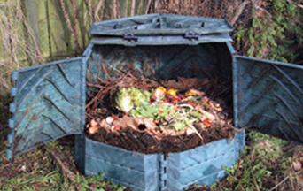
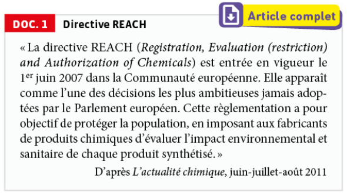
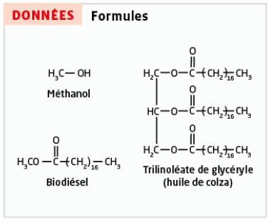
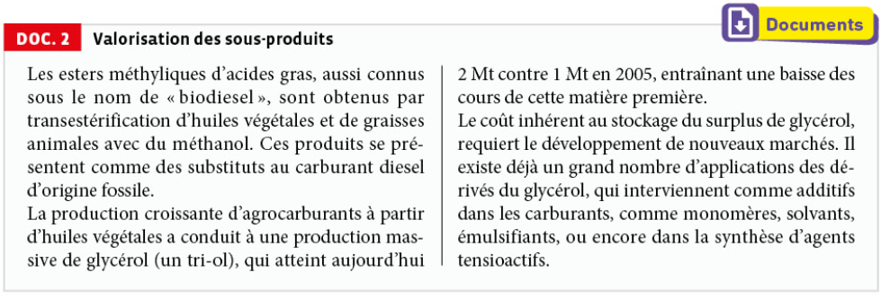
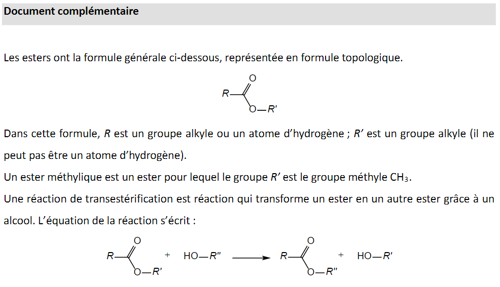
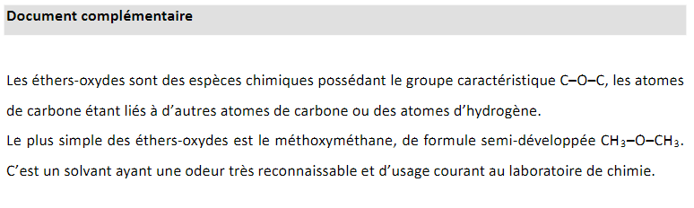
1. S'approprier
a. À l'aide des données, identifier le groupe caractéristique et la famille fonctionnelle du biodiesel.
b. Le trilinoléate de glycéryle (huile de colza) possède trois groupes caractéristiques identiques. Les identifier et nommer la famille correspondante.
c. À quelle famille appartient le méthanol ?
2. Analyser-raisonner
a. En s'appuyant sur le document complémentaire sur la transestérification et sur la fiche méthode p.524, écrire l'équation de la réaction entre le trilinoléate de glycéryle et le méthanol conduisant au biodiesel.
b. Identifier l'autre espèce organique formée au cours de cette réaction. À quelle famille appartient-elle ?
c. Expliquer pourquoi la production industrielle de biodiesel s'accompagne nécessairement d'une production importante de glycérol.
d. À l'aide du Doc 2, expliquer en quoi la valorisation du glycérol s'inscrit dans une démarche de chimie durable.
3. Valider
À l'aide du Doc 1, expliquer le rôle de la directive REACH, puis rédiger une courte conclusion mettant en relation la synthèse du biodiesel, la valorisation de ses sous-produits et cette réglementation dans une démarche globale de chimie durable.
1a. Le biodiesel possède un groupe caractéristique C(=O)–O–CH₃, identique à la formule générale R–C(=O)–O–R' d'un ester (document complémentaire) avec ici R' = CH₃ : il appartient à la famille des esters (plus précisément, c'est un ester méthylique).
1b. Le trilinoléate de glycéryle possède trois groupes ester C(=O)–O–, un sur chacune des trois chaînes issues du glycérol : c'est un triester (aussi appelé triglycéride, car il dérive d'un tri-alcool, le glycérol).
1c. Le méthanol H₃C–OH possède un groupe hydroxy –OH porté par un atome de carbone ne portant que des liaisons simples : il appartient à la famille des alcools.
2a. Trilinoléate de glycéryle + 3 H₃C–OH → 3 H₃CO–C(=O)–(CH₂)₁₆–CH₃ (biodiesel) + glycérol. Chacun des trois groupes ester du triester réagit avec une molécule de méthanol, ce qui nécessite 3 équivalents de méthanol.
2b. L'autre espèce formée est le glycérol (propane-1,2,3-triol) : c'est le groupe R'–OH libéré par la transestérification, ici un tri-alcool puisque le groupe glycéryle porte trois groupes –OH.
2c. D'après l'équation de la question 2a., une seule molécule de glycérol est formée pour trois molécules de biodiesel : la production de biodiesel s'accompagne donc structurellement, dans les proportions de la réaction, d'une quantité importante de glycérol coproduit.
2d. D'après le Doc 2, le glycérol issu de la transestérification n'est pas considéré comme un déchet : il est utilisé comme additif dans les carburants, comme monomère, comme solvant ou comme émulsifiant. En développant ces débouchés, l'industrie évite l'accumulation d'un sous-produit inutilisé — c'est une logique d'économie circulaire, caractéristique d'une démarche de chimie durable qui cherche à valoriser chaque sous-produit plutôt qu'à le considérer comme un déchet.
3. La directive REACH impose aux fabricants de produits chimiques d'évaluer l'impact environnemental et sanitaire de chaque produit synthétisé, afin de protéger la population : elle encadre donc la production industrielle du biodiesel comme celle de ses sous-produits. La synthèse du biodiesel à partir d'une huile végétale renouvelable (plutôt qu'à partir du pétrole), associée à la valorisation systématique du glycérol coproduit et à une réglementation qui impose d'évaluer les risques de chaque substance, illustre une démarche de chimie durable : elle vise à limiter l'épuisement des ressources fossiles, à réduire les déchets en valorisant les sous-produits, et à maîtriser les risques pour la santé et l'environnement.
Exercice 12 : Déterminer un produit
Recopier et compléter les actes élémentaires ci-dessous en indiquant le ou les produits formés.
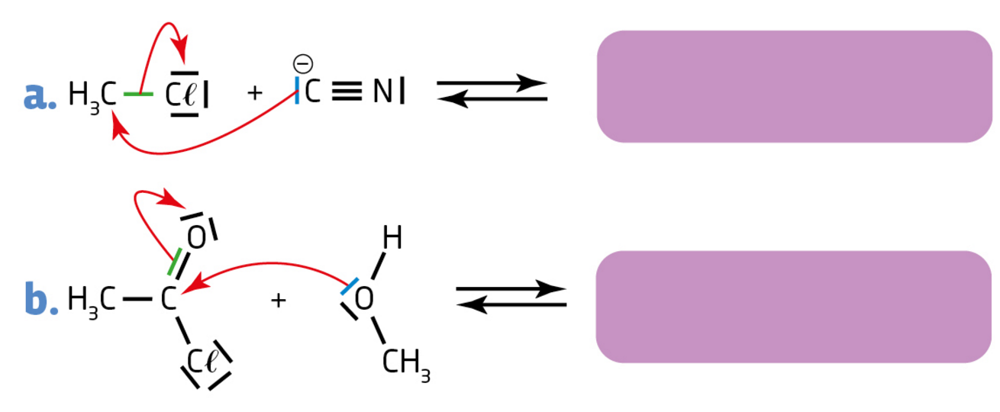
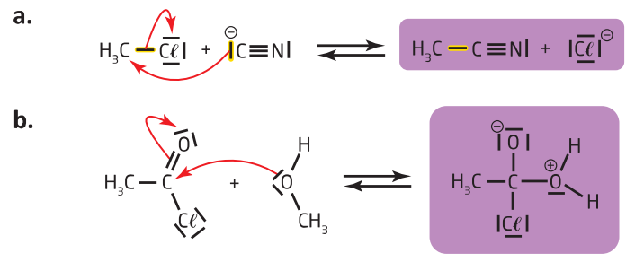
Exercice 13 : Représenter des flèches courbes
Le détail du mécanisme de l'exercice 10 est représenté ci-dessous.
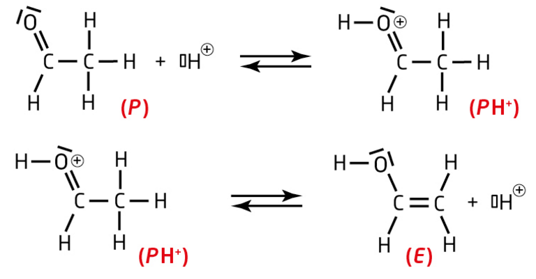
a. Justifier la présence d'une charge formelle positive sur l'atome d'oxygène de l'entité PH⁺.
b. Reproduire le mécanisme et le compléter avec les flèches courbes qui conviennent.
a. Dans l'entité PH⁺, l'atome d'oxygène porte une liaison double C=O, une liaison simple O–H et un seul doublet non liant, soit 3 liaisons et 1 doublet non liant. Un atome d'oxygène neutre porte habituellement 2 liaisons et 2 doublets non liants : ici, l'oxygène a gagné une liaison supplémentaire (avec l'atome d'hydrogène H⁺) sans gagner d'électron supplémentaire, ce qui lui confère une charge formelle positive.
b. Mécanisme complété avec les flèches courbes :
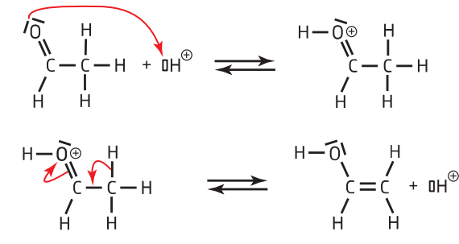
Exercice 22 : Analyser des résultats expérimentaux
Une transformation est modélisée par la réaction d'équation : C₂H₅I + HO⁻ → C₂H₅OH + I⁻.
Expérimentalement, les deux réactifs sont introduits initialement à la même concentration en quantité de matière c₀. La transformation est réalisée à une température T contrôlée. Les graphiques ci-dessous représentent l'évolution au cours du temps de la vitesse volumique de formation de l'éthanol.
Graphique 1 : les deux expériences sont réalisées à la même température (320 K), mais avec des valeurs de concentration en quantité de matière initiale différentes (10 mmol·L⁻¹ et 20 mmol·L⁻¹).
Graphique 2 : les deux expériences sont réalisées avec la même valeur de concentration en quantité de matière initiale (10 mmol·L⁻¹), mais à des températures différentes de 320 K et 330 K.
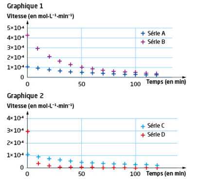
a. Identifier les facteurs cinétiques ainsi mis en évidence.
b. Pour les deux graphiques, indiquer les valeurs de c₀ et T utilisées pour chaque série de données. Justifier l'attribution en s'appuyant sur une interprétation microscopique.
a. Le graphique 1 compare deux expériences à température identique mais à concentrations initiales différentes : il met en évidence le facteur cinétique concentration. Le graphique 2 compare deux expériences à concentration initiale identique mais à températures différentes : il met en évidence le facteur cinétique température.
b. Graphique 1 : la série B présente la vitesse initiale la plus élevée (environ 4×10⁻⁴ mol·L⁻¹·min⁻¹) : elle correspond donc à la concentration initiale la plus grande, c₀ = 20 mmol·L⁻¹. La série A, de vitesse initiale plus faible (environ 1×10⁻⁴ mol·L⁻¹·min⁻¹), correspond à c₀ = 10 mmol·L⁻¹. Les deux séries sont réalisées à la même température T = 320 K. À l'échelle microscopique, une concentration initiale plus grande signifie davantage d'entités C₂H₅I et HO⁻ par unité de volume : les entités sont statistiquement plus proches les unes des autres, ce qui augmente la fréquence des collisions entre elles et donc la vitesse de la transformation.
Graphique 2 : la série D présente la vitesse initiale la plus élevée (environ 3×10⁻⁴ mol·L⁻¹·min⁻¹) : elle correspond donc à la température la plus élevée, T = 330 K. La série C, de vitesse initiale plus faible (environ 1×10⁻⁴ mol·L⁻¹·min⁻¹), correspond à T = 320 K. Les deux séries sont réalisées à la même concentration initiale c₀ = 10 mmol·L⁻¹. À l'échelle microscopique, une température plus élevée augmente l'énergie cinétique moyenne des entités, donc leur vitesse : les collisions entre entités sont à la fois plus fréquentes et plus efficaces (une plus grande proportion d'entre elles dispose de l'énergie cinétique suffisante pour être efficace), ce qui augmente la vitesse de la transformation.
Exercice 12 : Identifier des modifications
Plus de la moitié de la production mondiale d'éthène est utilisée pour la synthèse du polyéthylène, un polymère. L'éthène peut également subir d'autres transformations.
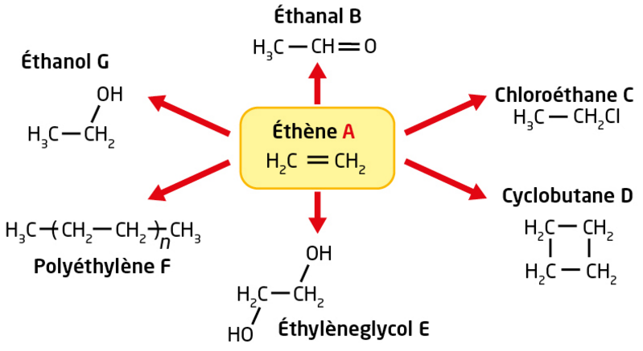
Pour chacune de ces transformations, préciser s'il y a modification de la chaîne carbonée et/ou transformation de groupe(s) caractéristique(s).
Éthanal B (H₃C–CH=O) : la chaîne carbonée reste à 2 atomes de carbone, non ramifiée → pas de modification de chaîne carbonée. Un groupe carbonyle C=O apparaît → transformation de groupe caractéristique.
Chloroéthane C (H₃C–CH₂Cl) : la chaîne carbonée reste à 2 atomes de carbone → pas de modification de chaîne carbonée. Un atome de chlore remplace un atome d'hydrogène → transformation de groupe caractéristique.
Cyclobutane D : deux molécules d'éthène (2×2 = 4 atomes de carbone) se referment en cycle → modification de la chaîne carbonée (allongement et cyclisation). Aucun groupe caractéristique n'apparaît (hydrocarbure saturé) → pas de transformation de groupe caractéristique.
Éthylèneglycol E (HO–CH₂–CH₂–OH) : la chaîne carbonée reste à 2 atomes de carbone → pas de modification de chaîne carbonée. Deux groupes hydroxyle OH apparaissent → transformation de groupe caractéristique.
Polyéthylène F : de nombreuses molécules d'éthène s'enchaînent pour former une longue chaîne → modification de la chaîne carbonée (allongement). Aucun groupe caractéristique n'apparaît → pas de transformation de groupe caractéristique.
Éthanol G (H₃C–CH₂–OH) : la chaîne carbonée reste à 2 atomes de carbone → pas de modification de chaîne carbonée. Un groupe hydroxyle OH apparaît → transformation de groupe caractéristique.
Exercice 13 : Déterminer une catégorie de réaction
Déterminer la catégorie de chacune des transformations suivantes.
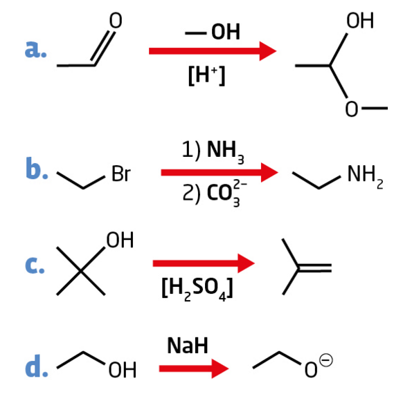
a-d. Justifier chaque catégorie identifiée.
a. L'aldéhyde réagit avec le méthanol en milieu acide pour former un hémiacétal : le méthanol s'additionne sur la double liaison C=O sans qu'aucun atome ne soit perdu → réaction d'addition.
b. L'atome de brome est d'abord remplacé par le groupe NH₃⁺ (puis déprotonné par CO₃²⁻ pour donner NH₂) : un atome est remplacé par un autre groupe sur le même carbone → réaction de substitution.
c. L'alcool tertiaire perd une molécule d'eau en présence de H₂SO₄, avec formation d'une double liaison C=C → réaction d'élimination.
d. NaH, base forte, arrache le proton du groupe OH de l'éthanol pour former l'ion éthanolate : il s'agit d'un simple transfert de proton H⁺ → réaction acido-basique.
Exercice 14 : Compléter une équation de réaction
L'équation de réaction suivante modélise une transformation acide-base.
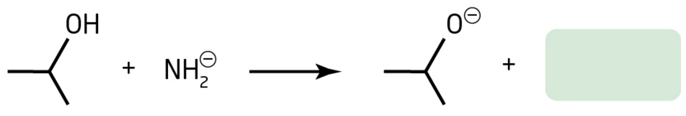
Recopier et compléter l'équation de réaction et identifier les couples acide-base concernés.
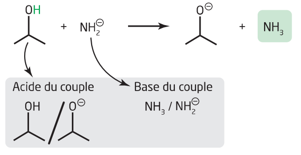
Exercice 15 : Reconnaître un type de réaction
L'huile essentielle de menthe contient 47 % de menthol et 22 % de menthone.
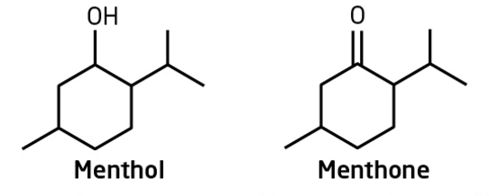
a. Déterminer la formule brute (formule moléculaire) de ces deux espèces.
b. En écrivant une demi-équation électronique, montrer que le couple menthone / menthol est un couple oxydant-réducteur.
c. La menthone peut être transformée en menthol par réaction avec le tétrahydroborate de sodium NaBH₄. Préciser si ce dernier est un oxydant ou un réducteur.
a. Le menthol a pour formule brute C₁₀H₂₀O. La menthone, qui possède une liaison C=O à la place d'un groupe CH–OH, a pour formule brute C₁₀H₁₈O (deux atomes d'hydrogène de moins que le menthol).
b. Demi-équation électronique du couple menthone/menthol : Menthone + 2 H⁺ + 2 e⁻ = Menthol. La menthone gagne 2 atomes d'hydrogène et 2 électrons pour donner le menthol : ce couple met en jeu un échange d'électrons, c'est donc bien un couple oxydant-réducteur (menthone = forme oxydée, menthol = forme réduite).
c. D'après la demi-équation précédente, transformer la menthone en menthol correspond à une réduction (gain d'électrons par la menthone). Le tétrahydroborate de sodium NaBH₄, qui permet cette réduction, doit donc céder des électrons à la menthone : NaBH₄ est un réducteur.
Exercice 18 : Choisir un réactif dans une banque de réactions
Le fonctionnement de certains éthylotests repose sur la transformation de l'éthanol CH₃CH₂OH en acide éthanoïque CH₃COOH.
a. Montrer à l'aide d'une demi-équation électronique qu'il s'agit d'une oxydation du substrat.
b. Choisir dans la banque de réactions p. 524 un réactif permettant de réaliser cette transformation.
a. Demi-équation électronique de l'oxydation de l'éthanol en acide éthanoïque : CH₃CH₂OH + H₂O = CH₃COOH + 4 H⁺ + 4 e⁻. L'éthanol cède 4 électrons pour former l'acide éthanoïque : il s'agit bien d'une oxydation du substrat (perte d'électrons).
b. Il faut choisir, dans la banque de réactions p. 524, le réactif correspondant à la réaction d'oxydation d'un alcool primaire en acide carboxylique (par exemple un oxydant tel que l'ion dichromate Cr₂O₇²⁻ en milieu acide) : reporte-toi à la fiche méthode ci-dessus pour identifier la réaction exacte et le réactif associé dans la banque.
Exercice 20 : Justifier l'ordre d'une séquence
a. À l'aide de la banque de réactions p. 524, proposer un réactif pour chacune des transformations suivantes.
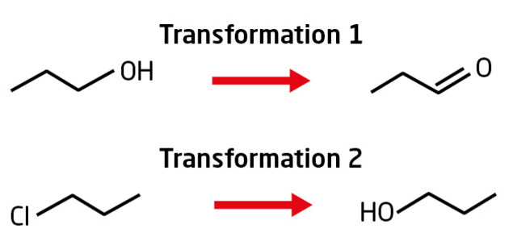
b. Pour réaliser la transformation suivante, indiquer l'ordre dans lequel il faut utiliser les deux réactifs précédents. Justifier.
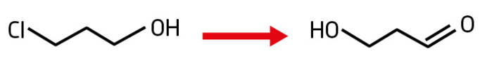
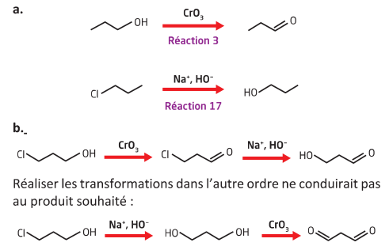
Exercice 29 : Synthèse de l'acide lactique
Chez les mammifères, le lactaldéhyde A est transformé sélectivement en acide lactique B grâce à un oxydant (usuellement noté NAD⁺) en présence d'une enzyme, la protéine aldéhyde déshydrogénase.
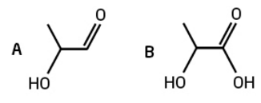
a. La transformation d'un aldéhyde en acide carboxylique peut être réalisée en utilisant le permanganate de potassium KMnO₄. Montrer, à l'aide de la banque de réactions p. 524, que le traitement de A par le permanganate de potassium ne conduit pas à B, mais à une espèce C. Représenter C.
b. Proposer une séquence réactionnelle s'appuyant sur une stratégie de protection/déprotection pour réaliser la transformation de A en B.
a. Le permanganate de potassium (K⁺, MnO₄⁻) oxyde à la fois le groupe aldéhyde et le groupe alcool secondaire de A. D'après la banque de réactions (Réaction 2 et Réaction 10), il transforme donc A en une espèce C où l'aldéhyde est devenu un acide carboxylique, mais où l'alcool a lui aussi été oxydé — C n'est donc pas l'acide lactique B recherché :
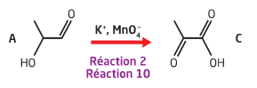
b. Pour obtenir sélectivement B, il faut protéger le groupe OH de A avant l'oxydation, puis le déprotéger ensuite : protection du OH (NaH puis PhBr, Réaction 7), transformation de l'aldéhyde en acide carboxylique par K⁺, MnO₄⁻ (Réaction 10), puis déprotection par H₂(g) en présence de nickel (Réaction 32) pour retrouver le groupe OH et obtenir B :
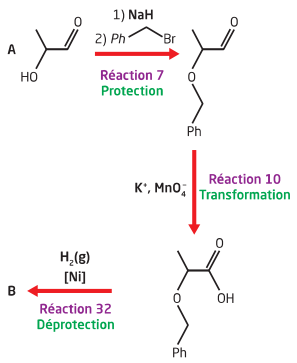
Exercice 30 : Séquence réactionnelle
Le propanoate d'éthyle est une espèce odorante présente dans la chair des fraises et dont la concentration augmente considérablement au cours de la maturation des fruits.
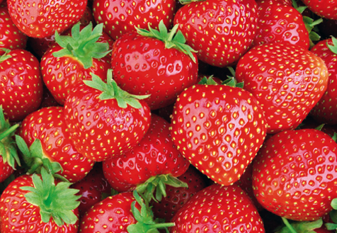
À l'aide de la banque de réactions p. 524, proposer une séquence réactionnelle permettant de le synthétiser à partir de propan-1-ol et d'éthanol.
Le propanoate d'éthyle est un ester formé d'une partie « acide » à 3 atomes de carbone (issue du propan-1-ol) et d'une partie « alcool » à 2 atomes de carbone (issue de l'éthanol) :
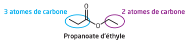
La séquence réactionnelle comporte donc deux étapes : le propan-1-ol est d'abord oxydé en acide propanoïque grâce à K⁺, MnO₄⁻ (Réaction 1), puis l'acide propanoïque obtenu réagit avec l'éthanol lors d'une réaction d'estérification en présence de H⁺ (Réaction 21) pour donner le propanoate d'éthyle :
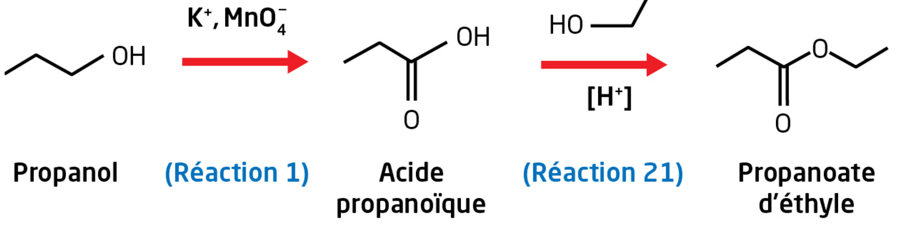
Exercice 25 : Accélérer une réaction d'oxydoréduction
L'oxydation de l'ion thallium Tl⁺ par l'ion Ce⁴⁺ est une transformation très lente. Elle se déroule en un seul acte élémentaire et conduit à la formation de l'ion Ce³⁺ et de l'ion Tl²⁺. À 25 °C, la formation des produits est quatre fois plus rapide en présence d'ion argent Ag⁺. Le mécanisme proposé pour expliquer cette observation est le suivant :
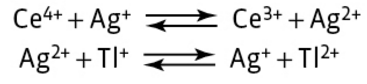
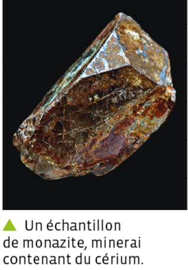
a. Écrire le mécanisme de la transformation en l'absence d'ion Ag⁺.
b. Indiquer l'effet probable d'une augmentation de la température et de la concentration en ion Ce⁴⁺ sur la vitesse de formation des ions Ce³⁺ et Tl²⁺, en l'absence d'ion Ag⁺. Argumenter la réponse à l'aide d'une modélisation microscopique.
c. Identifier le rôle de l'ion Ag⁺. Justifier.
a. En l'absence d'ion Ag⁺, la transformation se fait directement, en un seul acte élémentaire : Ce⁴⁺ + Tl⁺ → Ce³⁺ + Tl²⁺.
b. Une augmentation de la température accroît l'agitation thermique des entités : les ions Ce⁴⁺ et Tl⁺ se déplacent plus vite, ce qui augmente la fréquence des chocs entre eux et l'énergie de ces chocs, donc la proportion de chocs efficaces — la vitesse de formation des produits augmente. De même, une augmentation de la concentration en ion Ce⁴⁺ accroît le nombre d'entités Ce⁴⁺ par unité de volume, ce qui augmente la fréquence des chocs avec les ions Tl⁺ et donc également la vitesse de formation des produits.
c. En additionnant les deux actes élémentaires du mécanisme en présence de Ag⁺ (Ce⁴⁺ + Ag⁺ ⇌ Ce³⁺ + Ag²⁺, puis Ag²⁺ + Tl⁺ ⇌ Ag⁺ + Tl²⁺), l'ion Ag⁺ consommé dans le premier acte est régénéré dans le second : il n'apparaît pas dans le bilan global (Ce⁴⁺ + Tl⁺ → Ce³⁺ + Tl²⁺, identique à la question a.). Ag⁺ n'est donc pas consommé mais accélère la transformation en offrant un chemin réactionnel différent, en deux étapes plus rapides que l'acte élémentaire direct : il joue le rôle de catalyseur.
Exercice 26 : Déshydratation des alcools
En présence d'ion H⁺, à condition de travailler à température suffisamment élevée, le 3-méthylbutan-2-ol subit une transformation appelée déshydratation pour former du 2-méthylbut-2-ène. À l'échelle des entités, cette transformation peut être modélisée par le mécanisme réactionnel suivant.
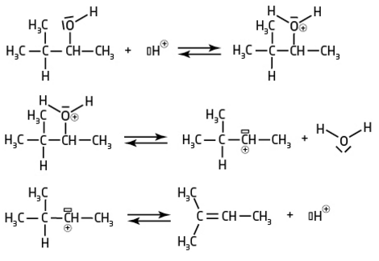
a. Déterminer l'équation de la réaction qui modélise la transformation.
b. Reproduire le mécanisme en faisant figurer les flèches courbes des actes élémentaires.
c. Identifier les deux intermédiaires réactionnels qui interviennent dans le mécanisme.
d. Préciser le rôle de l'ion H⁺.
a. En additionnant les trois actes élémentaires du mécanisme, les intermédiaires réactionnels et l'ion H⁺ se simplifient : il ne reste que le réactif et les produits du bilan global.
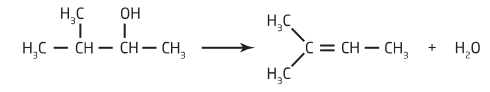
b. Dans le premier acte, un doublet non liant de l'oxygène de l'alcool attaque l'ion H⁺ pour former l'alcool protoné. Dans le deuxième acte, un doublet non liant de l'oxygène de l'eau part vers l'atome d'oxygène qui se détache, laissant un carbocation. Dans le troisième acte, un doublet de liaison C–H voisin du carbocation se déplace pour former la double liaison C=C, en libérant un ion H⁺.
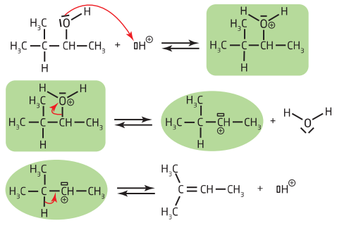
c. Les deux intermédiaires réactionnels sont l'alcool protoné (ion oxonium, formé après le premier acte et consommé au deuxième) et le carbocation (formé après le deuxième acte et consommé au troisième).
d. L'ion H⁺ est consommé au premier acte élémentaire puis régénéré au troisième : il n'apparaît pas dans le bilan global de la question a. Comme Ag⁺ dans l'Exercice 25, H⁺ n'est donc pas consommé par la transformation mais permet d'accélérer la réaction en offrant un chemin réactionnel en plusieurs étapes : il joue le rôle de catalyseur.
Exercice 28 : Décomposition rapide de l'urée
La décomposition de l'urée NH2–CO–NH2 dans l'eau est modélisée par la réaction d'équation : NH2–CO–NH2 → OCN− + NH4+. Le suivi de l'évolution au cours du temps de la concentration en quantité d'urée a été réalisé à deux températures différentes : 61 °C et 71 °C. Les résultats sont rassemblés sur la représentation graphique suivante.
a. Indiquer à quelle température correspond chacune des courbes, en justifiant.
b. Préciser si, dans ce cas, le modèle de chocs efficaces entre entités de deux réactifs différents permet d'interpréter l'effet de la température sur la vitesse de la réaction.
c. En présence d'uréase, la vitesse de formation des produits est multipliée par plus de 104. Identifier le rôle de l'uréase.
d. Déterminer si, pour augmenter la vitesse de formation des produits, il est plus efficace d'augmenter la température ou d'ajouter de l'uréase.
a. La courbe bleue décroît plus rapidement que la courbe orange (par exemple, la concentration en urée est divisée par deux en environ 200 h pour la courbe bleue, contre environ 750 h pour la courbe orange) : la réaction est donc plus rapide pour la courbe bleue. Or une augmentation de température accélère toujours une transformation chimique : la courbe bleue correspond donc à 71 °C, et la courbe orange à 61 °C.
b. Non. L'équation de la réaction NH2–CO–NH2 → OCN− + NH4+ ne fait intervenir qu'un seul réactif, l'urée : il s'agit d'une décomposition (transformation unimoléculaire), et non d'une réaction entre deux entités réactives différentes. Le modèle des chocs efficaces entre deux réactifs distincts ne s'applique donc pas ici pour interpréter l'effet de la température ; l'accélération de la réaction avec la température s'explique par l'augmentation de l'agitation thermique des molécules d'urée elles-mêmes, qui favorise leur décomposition.
c. L'uréase n'apparaît pas dans l'équation de la réaction et permet de multiplier très fortement la vitesse de formation des produits sans être consommée : elle joue donc le rôle de catalyseur (ici un catalyseur biologique, appelé enzyme).
d. D'après le graphique, passer de 61 °C à 71 °C multiplie la vitesse de la réaction par un facteur de l'ordre de 4 (le temps nécessaire pour diviser par deux la concentration en urée passe d'environ 750 h à environ 200 h). Ce facteur est très inférieur au facteur supérieur à 104 obtenu en ajoutant de l'uréase. Il est donc bien plus efficace d'ajouter de l'uréase (catalyseur) que d'augmenter la température pour accélérer la formation des produits.
Exercice 21 : Synthétiser sans toucher au groupe carbonyle
On souhaite faire réagir l'espèce A avec le réactif de Grignard B (bromure d'éthylmagnésium) afin d'obtenir l'espèce D. On dispose pour cela de la banque de réactions p. 524 (la même que dans l'Activité 7 et l'Exercice 11).
a. Identifier les deux groupes caractéristiques présents dans l'espèce A.
b. On fait réagir directement l'espèce A avec un excès du réactif de Grignard B, sans étape de protection. À l'aide de la banque de réactions (Réaction 14 puis Réaction 20), montrer que l'on obtient alors l'espèce C, et non l'espèce D recherchée.
c. Proposer, à l'aide de la banque de réactions, une séquence en trois étapes permettant d'obtenir l'espèce D à partir de A, sans que le réactif B ne réagisse avec le groupe carbonyle.
d. Nommer cette succession de trois étapes.
a. L'espèce A possède deux groupes caractéristiques : un groupe carbonyle C=O (groupe aldéhyde) à une extrémité de la chaîne, et un atome de brome porté par un atome de carbone (halogénoalcane) à l'autre extrémité.
b. Le réactif de Grignard B réagit d'abord par addition sur le groupe carbonyle de A (Réaction 14), ce qui crée une première liaison C–C et transforme l'aldéhyde en alcool secondaire ; le brome n'est pas encore touché. Un second équivalent de B réagit ensuite avec la liaison C–Br (Réaction 20), ce qui crée une seconde liaison C–C. Les deux groupes réactifs de A ayant réagi avec B, on obtient l'espèce C, allongée aux deux extrémités, et non l'espèce D recherchée (qui doit conserver un groupe aldéhyde intact) :
c. Pour empêcher B de réagir avec le carbonyle, il faut d'abord protéger l'aldéhyde sous forme d'acétal cyclique à l'aide d'un diol en milieu acide (Réaction 12). Le réactif B peut alors réagir uniquement avec la liaison C–Br (Réaction 20), en créant la liaison C–C recherchée, sans toucher au groupe protégé. Une hydrolyse en milieu acide (Réaction 31) permet enfin de régénérer le groupe aldéhyde et d'obtenir D :
d. Cette succession de trois étapes est appelée séquence protection – transformation – déprotection : le groupe carbonyle est d'abord protégé (transformé provisoirement en un autre groupe non réactif vis-à-vis de B), puis le second groupe réactif est transformé, avant que le groupe protecteur ne soit retransformé « en sens opposé » pour reformer le groupe carbonyle initial.
Exercice 24 : Une synthèse écoresponsable de l'éthène ?
L'éthène C₂H₄ est essentiellement produit par chauffage de dérivés du pétrole à plus de 800 °C. De l'éthène « vert » peut être produit par déshydratation de l'éthanol, obtenu par exemple à partir de canne à sucre, selon la réaction d'équation suivante, à 300 °C, en utilisant une zéolithe (un solide très poreux) comme catalyseur :
C2H5OH(g) → C2H4(g) + H2O(g)
Identifier les différentes raisons qui permettent de qualifier cette synthèse d'écoresponsable.
- Dresser un tableau comparatif des deux méthodes de synthèse de l'éthène, faisant apparaître l'origine de la matière première et les conditions de synthèse.
- Faire une phrase de conclusion.
- Émettre éventuellement des réserves reposant sur l'absence d'information sur la production de l'éthanol nécessaire à la fabrication de l'éthène vert.
On compare les deux méthodes de synthèse de l'éthène :
| Éthène « classique » | Éthène « vert » | |
|---|---|---|
| Matière première | Dérivés du pétrole : ressource fossile, non renouvelable | Éthanol issu de la canne à sucre : ressource renouvelable (biomasse) |
| Conditions de synthèse | Chauffage à plus de 800 °C : procédé très énergivore | 300 °C, en présence d'un catalyseur solide (zéolithe) : température plus modérée, catalyseur aisément séparable du milieu et réutilisable |
Conclusion : la synthèse de l'éthène « vert » utilise une matière première renouvelable (la canne à sucre) à la place d'une ressource fossile, et se déroule dans des conditions moins énergivores (300 °C au lieu de plus de 800 °C) grâce à un catalyseur solide facilement séparable du milieu réactionnel : elle peut donc être qualifiée d'écoresponsable au regard de ces deux critères.
Réserve : l'énoncé ne donne cependant aucune information sur les conditions de production de l'éthanol lui-même à partir de la canne à sucre (culture, récolte, fermentation, distillation…), qui peuvent elles aussi consommer de l'énergie, de l'eau ou des surfaces agricoles. Sans ces informations, on ne peut pas conclure de façon définitive sur le caractère écoresponsable de l'ensemble de la filière, depuis la canne à sucre jusqu'à l'éthène.
Exercice 27 : α-Terpinéol
L'α-terpinéol est une espèce chimique présente dans l'huile essentielle de pin. Elle peut aussi être synthétisée en deux étapes grâce à la séquence réactionnelle ci-dessous.
a. Identifier la nature des transformations mises en jeu.
b. Rechercher dans la banque de réactions p. 524 les réactifs et les conditions permettant de réaliser les deux transformations.
a. Lors de l'étape 1, le groupe acide carboxylique (–COOH) de A est transformé en groupe ester (–COO–) dans B : le groupe –OH de l'acide est remplacé par un groupe –O–CH₂CH₃ issu d'un alcool. C'est une réaction de substitution (estérification). Lors de l'étape 2, l'atome de carbone du groupe ester de B, qui porte 3 liaisons simples et 1 liaison double, se retrouve dans l'α-terpinéol avec 4 liaisons simples (porteur de deux groupes méthyle et d'un groupe –OH) : c'est une réaction d'addition.
b. D'après la banque de réactions p. 524 : l'étape 1 correspond à une estérification entre l'acide carboxylique A et l'éthanol, réalisée en présence d'un catalyseur acide (H⁺) — la même réaction que celle utilisée à l'Exercice 11 pour former le propanoate d'éthyle. L'étape 2 correspond à l'addition d'un réactif de Grignard (bromure de méthylmagnésium CH₃–MgBr, deux équivalents) sur le groupe ester de B, suivie d'une hydrolyse acide : cette double addition remplace le groupe –O–CH₂CH₃ de l'ester par deux groupes méthyle et un groupe –OH, formant ainsi l'alcool tertiaire α-terpinéol.
Exercice 31 : Analyse d'une biosynthèse
L'acide o-coumarique est présent en quantité importante dans les fèves de certaines espèces de caféiers. La séquence réactionnelle ci-dessous présente quelques-unes des étapes de sa biosynthèse chez les végétaux.
a. Rappeler le ou les critère(s) qui permet(tent) de reconnaître une réaction d'élimination, d'addition ou de substitution.
b. Déterminer à quelle catégorie appartient chaque étape de la biosynthèse de l'acide o-coumarique.
a. Une réaction d'addition se reconnaît à une augmentation du nombre de liaisons simples portées par l'atome (ou les atomes) de carbone concerné : une liaison multiple disparaît au profit de liaisons simples supplémentaires. Une réaction d'élimination est l'inverse : le nombre de liaisons simples diminue, une liaison multiple apparaît, avec départ d'une petite molécule. Une réaction de substitution se reconnaît à un remplacement d'un atome ou groupe d'atomes par un autre, sans changement du nombre de liaisons simples portées par l'atome de carbone concerné.
b. En comparant le nombre de liaisons simples portées par les atomes de carbone concernés avant et après chaque étape :
Lors de l'étape 1, le carbone du groupe carbonyle passe de 2 à 4 liaisons simples : c'est une addition. Lors de l'étape 2, les deux atomes de carbone concernés passent de 4 à 2 liaisons simples chacun, avec formation d'une double liaison C=C et départ de NH₃ : c'est une élimination. Lors de l'étape 3, un atome d'hydrogène porté par le cycle aromatique est remplacé par un groupe –OH, sans changement du nombre de liaisons simples du carbone concerné : c'est une substitution.
Exercice 33 : Alkylation
La séquence réactionnelle suivante est envisagée :
a. Écrire l'équation de la réaction acide-base qui modélise la première étape si la base utilisée pour transformer A est l'ion C₂H₅O⁻.
b. Montrer que, pour l'espèce CH₃–Br, la transformation est une substitution.
c. Identifier le type de transformation (modification de groupe caractéristique ou de chaîne carbonée) que le substrat A subit au cours de sa transformation en B.
d. Justifier que la transformation de A en B est appelée « alkylation ».
e. L'espèce A peut être obtenue à partir du diacide carboxylique C. À l'aide de la banque de réactions, proposer un réactif et des conditions expérimentales permettant de réaliser la transformation.
f. Proposer une équation pour la réaction qui modélise cette transformation et identifier la « petite » molécule formée en plus de A.
g. À l'aide de la banque de réactions, proposer un (des) réactif(s) permettant de transformer B en D.
h. Identifier une séquence de protection-déprotection dans la transformation de C en D.
i. Expliquer l'intérêt de cette stratégie. On pourra se rappeler qu'un acide carboxylique appartient à un couple acide-base.
j. Un chauffage permet d'obtenir E à partir de D. En écrivant la formule brute de D et celle de E, identifier la « petite » molécule également produite par cette transformation.
a. L'ion éthanolate C₂H₅O⁻ arrache l'hydrogène porté par le carbone central de A, situé entre les deux groupes esters. Cet hydrogène est particulièrement acide car sa base conjuguée (le carbanion) est stabilisée par délocalisation avec les deux groupes carbonyle voisins :
EtO–CO–CH₂–CO–OEt + C₂H₅O⁻ ⇌ EtO–CO–CH⁻–CO–OEt + C₂H₅OH
b. Dans CH₃–Br, le carbone porte 3 liaisons C–H et 1 liaison C–Br, soit 4 liaisons simples. Après réaction avec le carbanion, ce même carbone porte 3 liaisons C–H et 1 nouvelle liaison C–C, soit toujours 4 liaisons simples : le nombre de liaisons simples ne change pas, mais l'atome de brome est remplacé par le carbanion. C'est donc bien une substitution :
c. Les deux groupes esters de A sont conservés à l'identique dans B : aucun groupe caractéristique n'est modifié. En revanche, le squelette carboné s'allonge et se ramifie (ajout d'un groupe méthyle sur le carbone central) : il s'agit donc d'une modification de la chaîne carbonée.
d. Un groupe alkyle (ici un groupe méthyle, issu de CH₃Br) est greffé sur le carbone central de la chaîne, à la place d'un atome d'hydrogène : cette transformation est donc bien appelée une alkylation.
e. A est un diester obtenu à partir du diacide carboxylique C : il faut réaliser une estérification en faisant réagir C avec un excès d'éthanol, en présence d'un catalyseur acide (H⁺), pour estérifier les deux groupes acides carboxyliques de C.
f. Équation de l'estérification, avec formation de deux équivalents d'eau (la « petite » molécule formée) :
g. Pour transformer B en D, il faut réaliser l'hydrolyse des deux groupes esters de B, en milieu acide (H₃O⁺, H₂O) ou basique : cette réaction régénère les deux groupes acides carboxyliques et conduit à D (en libérant deux équivalents d'éthanol dans le cas d'une hydrolyse acide).
h. La séquence complète C → A → B → D correspond à une séquence de protection – transformation – déprotection : les deux groupes acides carboxyliques de C sont d'abord protégés sous forme d'esters (C → A), le carbone central est ensuite alkylé sans toucher aux groupes protégés (A → B), puis les groupes esters sont déprotégés pour redonner les groupes acides carboxyliques (B → D) :
i. Un acide carboxylique appartient au couple acide-base RCOOH / RCOO⁻ : si la base C₂H₅O⁻ était mise en présence du diacide C non protégé, elle réagirait prioritairement par acide-base avec les deux groupes acides carboxyliques (bien plus acides que le carbone central), en les déprotonant, plutôt que de déprotoner le carbone central visé :
La base serait ainsi consommée sans permettre l'alkylation recherchée. Protéger les groupes acides sous forme d'esters (bien moins acides) permet à la base de réagir sélectivement avec le carbone central lors de l'étape d'alkylation.
j. La formule brute de D (acide méthylmalonique, HOOC–CH(CH₃)–COOH) est C₄H₆O₄, et celle de E (acide propanoïque, CH₃–CH₂–COOH) est C₃H₆O₂. La différence entre ces deux formules correspond à un atome de carbone et deux atomes d'oxygène supplémentaires dans D : la « petite » molécule perdue lors du chauffage est donc le dioxyde de carbone CO₂ (réaction de décarboxylation).
Exercice 34 : Transformations de la cyclohexanone
La cyclohexanone est une espèce chimique intervenant dans la fabrication du nylon, un polymère utilisé dans l'industrie textile. Plus d'un million de tonnes de cyclohexanone est produite chaque année, en particulier par oxydation du cyclohexane.
a. Montrer, à l'aide d'une demi-équation électronique, que le couple cyclohexanone/cyclohexane est un couple oxydant-réducteur.
b. Écrire l'équation de la réaction qui modélise l'oxydation du cyclohexane en cyclohexanone par le dioxygène (couple oxydant-réducteur O₂/H₂O).
c. À l'aide de la banque de réactions p. 524, proposer un réactif pour réaliser chacune des transformations suivantes.
Question de transition
La cyclohexanone peut être transformée en acide adipique HOOC–(CH₂)₄–COOH. Indiquer en justifiant si cette transformation est une modification de chaîne carbonée et/ou de groupe caractéristique.
a. La demi-équation électronique du couple cyclohexanone/cyclohexane s'écrit :
Cette demi-équation fait intervenir des électrons échangés : le couple cyclohexanone/cyclohexane est donc bien un couple oxydant-réducteur, la cyclohexanone étant l'oxydant et le cyclohexane le réducteur.
b. En combinant la demi-équation de réduction du couple O₂/H₂O et la demi-équation d'oxydation du cyclohexane en cyclohexanone (sens inverse de la question a.), les électrons échangés s'éliminent :
c. D'après la banque de réactions p. 524 :
La transformation 1 (cyclohexanol) s'obtient par réduction du groupe carbonyle à l'aide de NaBH₄, puis hydrolyse (Réaction 11). La transformation 2 (alcool tertiaire) s'obtient par addition du réactif de Grignard CH₃MgBr, puis hydrolyse acide (Réaction 14). La transformation 3 (méthylènecyclohexane) s'obtient par réaction de Wittig avec CH₂=PPh₃ (Réaction 13). La transformation 4 (cyanhydrine) s'obtient par addition de l'ion cyanure CN⁻ (apporté par Na⁺,CN⁻), puis traitement basique (Réaction 15).
Question de transition : lors de la transformation de la cyclohexanone en acide adipique, le cycle à 6 atomes de carbone est ouvert pour donner une chaîne carbonée linéaire : c'est une modification de la chaîne carbonée. Par ailleurs, le groupe carbonyle (cétone) de la cyclohexanone est transformé en deux groupes acide carboxylique aux extrémités de la chaîne : c'est également une modification de groupe caractéristique. Cette transformation relève donc à la fois d'une modification de chaîne carbonée et de groupe caractéristique :
Exercice 38 : Séquence réactionnelle
a. À l'aide de la banque de réactions p. 524, proposer un réactif permettant de réaliser la transformation suivante.
b. Indiquer quel serait le produit formé si ce réactif était utilisé sur l'espèce ci-dessous.
c. Proposer une séquence réactionnelle permettant de réaliser la transformation ci-dessous.
a. Le réactif est le groupe ester du réactif et le groupe alcool primaire (–OH) du produit : il s'agit d'une réduction du groupe ester en alcool. D'après la banque de réactions p. 524, cette transformation est réalisée à l'aide de LiAlH₄, puis hydrolyse (H₂O).
b. Le réactif LiAlH₄ n'est pas sélectif : il réduit tous les groupes carbonyle qu'il rencontre. Appliqué à l'acétoacétate de méthyle, il réduit à la fois le groupe cétone (en alcool secondaire) et le groupe ester (en alcool primaire, avec perte du groupe méthoxy sous forme de méthanol). Le produit formé est donc le diol suivant :
c. Pour réduire sélectivement le groupe ester sans toucher au groupe cétone, il faut protéger temporairement ce dernier avant d'utiliser LiAlH₄, puis le régénérer une fois la réduction terminée. La séquence réactionnelle comporte donc trois étapes :
1) Protection du groupe carbonyle de la cétone à l'aide d'un diol en milieu acide (Réaction 12), pour le rendre inerte vis-à-vis du réducteur. 2) Réduction du groupe ester, resté seul groupe carbonyle réactif, à l'aide de LiAlH₄ puis hydrolyse (Réaction 28). 3) Déprotection du groupe carbonyle par hydrolyse en milieu acide (Réaction 31), qui régénère la cétone initiale et conduit au produit attendu.
Exercice 30 : On a vu des intermédiaires réactionnels !
La transformation modélisée par la réaction d'équation ci-dessous a été observée, à l'échelle des entités moléculaires (!), à l'aide d'un microscope à force atomique.
Les clichés obtenus sont donnés ci-dessous.
I et J sont les intermédiaires réactionnels observés successivement.
Identifier les liaisons rompues et formées au cours des différentes étapes du mécanisme réactionnel.
a. Entre A et I, une seule différence est visible : l'un des deux atomes de brome a disparu. La liaison C1–Br (en haut de la molécule) a donc été rompue.
b. Cette rupture ne peut pas être hétérolytique (les deux électrons de la liaison partant avec le même atome), car aucune charge + ou − n'apparaît sur les clichés : les deux atomes issus de la rupture repartent chacun avec un seul électron de la liaison. C'est une rupture homolytique : le carbone 1 conserve un électron célibataire (il devient un radical, noté avec un point •), et le brome part également sous forme de radical, •Br.
c. Entre I et J, la même transformation se reproduit sur l'autre atome de brome : la liaison C8–Br se rompt de façon homolytique, formant un second radical sur le carbone 8 et libérant un second radical •Br. La molécule J est donc un diradical : elle porte deux électrons célibataires, un sur C1 et un sur C8, et ne contient plus aucun atome de brome.
d. Entre J et B, plus aucun atome ne part : seule la structure interne du cycle se réorganise. Les deux électrons célibataires portés par C1 et C8 se réorganisent avec les électrons des liaisons voisines (C1–C2 et C7–C8) pour former deux nouvelles liaisons π supplémentaires. Chaque liaison simple C–C concernée devient ainsi une liaison triple C≡C. C'est un réarrangement intramoléculaire : aucune espèce n'est ni ajoutée ni perdue, seules des liaisons se forment à l'intérieur de la molécule.
e. Sur ce schéma, chaque mouvement d'électron est représenté par une flèche courbe à un seul crochet (« flèche à un demi-hameçon »), et non par une flèche à tête pleine comme pour un doublet d'électrons. C'est la convention utilisée pour un mécanisme radicalaire : chaque flèche à un crochet ne déplace qu'un seul électron, jamais une paire.
f. Bilan des étapes : la première étape (A → I) et la deuxième étape (I → J) sont chacune monomoléculaires : elles ne font intervenir qu'une seule entité (respectivement A et I), qui se dissocie spontanément. La troisième étape (J → B) est également monomoléculaire : c'est un réarrangement au sein d'une seule et même entité (J), sans intervention d'un second réactif.
g. Bilan global des liaisons : deux liaisons C–Br sont rompues (départ de 2 Br•), et deux liaisons π supplémentaires sont formées dans le cycle central, transformant deux liaisons simples C–C en liaisons triples C≡C. Ce bilan correspond bien à l'équation fournie : A → B + 2 Br.
Remarque de vocabulaire : le mot « radical » vient du latin radix, « la racine ». Les chimistes du XIXe siècle appelaient ainsi des groupes d'atomes censés rester intacts (comme la « racine » d'une molécule) au cours des réactions. Le sens a évolué : aujourd'hui, un radical désigne une espèce chimique possédant un électron célibataire (non apparié), qui la rend au contraire très réactive — c'est justement ce défaut d'appariement qui pousse C1 et C8 à se réorganiser spontanément à l'étape J → B.
Exercice 31 : Mais qu'a-t-on oublié ?
L'éthanoate d'éthyle CH₃–C(=O)–O–C₂H₅ est utilisé dans l'industrie agroalimentaire dans certains arômes fruités. La synthèse de l'éthanoate d'éthyle est facilement réalisable au laboratoire. Le début d'un protocole expérimental est décrit ci-dessous.
PROTOCOLE
- Dans un ballon de 100 mL, introduire un mélange de 0,10 mol d'acide éthanoïque CH₃–COOH et 0,10 mol d'éthanol C₂H₅–OH. Ajouter 0,5 mL d'acide sulfurique pur (H₂SO₄) pour former des ions H⁺ dans la solution, et trois grains de pierre ponce.
- Porter le mélange à ébullition dans un dispositif de chauffage à reflux pendant 30 minutes.
a. Écrire l'équation de la réaction qui modélise la transformation.
b. Compléter le mécanisme en représentant les flèches courbes.
c. Un binôme d'élèves a réalisé le protocole suggéré, puis procédé au traitement du milieu réactionnel et à l'isolement du produit. Grande est leur déception quand ils découvrent qu'ils n'ont pas obtenu d'éthanoate d'éthyle. Dépités, ils discutent entre eux pour identifier l'origine de leur erreur :
« Il n'y a pas de solvant dans le protocole, on aurait dû en ajouter un !
– La réaction aurait peut-être été plus rapide si on n'avait pas chauffé autant ?
– On a peut-être oublié l'acide sulfurique ?
– Mais l'acide sulfurique ne sert à rien, il n'est pas dans l'équation de la réaction. »
Répondre aux interrogations des élèves en s'appuyant sur le mécanisme et sur une interprétation de la transformation à l'échelle microscopique.
a. L'acide éthanoïque et l'éthanol réagissent pour former l'éthanoate d'éthyle et de l'eau :
b. Le mécanisme complet, catalysé par H⁺, comporte cinq actes élémentaires : protonation du groupe carbonyle de l'acide par H⁺ ; addition nucléophile de l'atome d'oxygène de l'éthanol sur le carbone ainsi rendu électrophile ; transfert d'un proton entre les deux atomes d'oxygène portant chacun un groupe –OH ; départ d'une molécule d'eau, qui régénère la liaison C=O ; puis déprotonation finale, qui régénère le catalyseur H⁺ et libère l'ester neutre.
c. Aucune des trois premières hypothèses des élèves n'est correcte :
— « Il n'y a pas de solvant, on aurait dû en ajouter un » : c'est faux. Les réactifs (acide et alcool) sont ici en excès l'un par rapport à l'autre et jouent eux-mêmes le rôle de milieu réactionnel ; aucun solvant n'est nécessaire au mécanisme, qui ne fait intervenir que l'acide, l'alcool et le catalyseur H⁺.
— « La réaction aurait été plus rapide si on n'avait pas autant chauffé » : c'est l'inverse. Chauffer augmente l'agitation thermique des entités, donc la fréquence et l'efficacité des chocs entre elles : cela accélère la transformation, cela ne peut pas expliquer une absence totale de produit. Réduire la température aurait ralenti la réaction, pas empêché sa réussite.
— « On a peut-être oublié l'acide sulfurique » : non, le protocole précise explicitement l'ajout de 0,5 mL d'acide sulfurique pur à l'étape 1.
— « L'acide sulfurique ne sert à rien, il n'est pas dans l'équation de la réaction » : c'est cette dernière affirmation qui contient la véritable erreur de raisonnement. Le mécanisme montre que H⁺ est consommé dès le premier acte (protonation du carbonyle) puis intégralement régénéré au dernier acte (déprotonation) : c'est un catalyseur. Un catalyseur n'apparaît jamais dans l'équation de la réaction (bilan global), puisqu'il est reformé en fin de mécanisme — mais cela ne signifie pas qu'il soit inutile : sans lui, aucune étape du mécanisme ne peut être amorcée, car c'est la protonation du groupe carbonyle par H⁺ qui rend le carbone électrophile et permet l'attaque de l'alcool. Sans catalyseur, la réaction est en pratique d'une lenteur telle qu'elle n'aboutit à aucune quantité observable de produit en 30 minutes de reflux.
Ce qui a donc réellement pu manquer ne se trouve pas dans les quatre hypothèses proposées, mais plus probablement dans la suite du protocole, non détaillée ici (refroidissement, séparation et lavage du milieu réactionnel, neutralisation de l'acide en excès avant l'isolement) : une erreur lors de ces étapes de traitement et d'isolement, postérieures à la réaction elle-même, explique plus vraisemblablement l'absence de produit récupéré.
Exercice 32 : Rompre une liaison dans le bon sens
La transformation chimique modélisée par la réaction d'équation suivante est décrite à l'échelle microscopique par un mécanisme nommé SN1.
a. Identifier les liaisons rompues et formées lors de cette transformation.
b. Indiquer la polarité de la liaison rompue, sachant que l'atome de chlore est plus électronégatif que celui de carbone.
c. Justifier la formation d'un ion carbénium (CH₃)₃C⁺ lors de la rupture de la liaison C–Cl.
d. Proposer un mécanisme en deux étapes et le compléter à l'aide de flèches courbes.
e. Le « S » de SN1 signifie « substitution ». Justifier l'utilisation de ce terme pour le mécanisme étudié.
f. Le « 1 » de SN1 signifie monomoléculaire, ce qui veut dire que l'acte élémentaire le plus difficile du mécanisme ne fait intervenir qu'un seul réactif. Identifier cet acte dans le mécanisme proposé précédemment.
g. Enfin le « N » de SN1 signifie « nucléophile ». Faire une recherche sur la signification de ce mot et identifier l'espèce qui peut être qualifiée de « nucléophile » dans le mécanisme.
a. Une liaison C–Cl est rompue et une liaison C–O est formée.
b. L'atome de chlore est plus électronégatif que l'atome de carbone, donc la liaison est polaire :
c. Lorsque la liaison est rompue, le doublet d'électrons est emporté par l'atome le plus électronégatif, le chlore. Après la rupture, le carbone restant n'établit plus que trois liaisons, alors qu'il en établit quatre dans les molécules usuelles. Il porte donc une charge positive : il se forme un ion carbénium.
d. Mécanisme en deux étapes complété avec les flèches courbes :
e. Sur l'un des atomes de carbone, l'atome de chlore est remplacé par le groupe hydroxy. Il s'agit donc d'une substitution.
f. Le premier acte élémentaire ne fait intervenir qu'une entité : il est monomoléculaire. Le second acte est bimoléculaire (deux entités). C'est donc le premier acte, qui correspond à la rupture de la liaison C–Cl, qui est le plus difficile.
g. Au sens étymologique du terme, nucléophile signifie « qui aime les noyaux ». Dans le contexte de la chimie, les noyaux sont les entités positives. Nucléophile signifie donc « attiré par les charges positives ». L'ion hydroxyde dans le deuxième acte élémentaire est attiré par la charge positive du carbénium. C'est donc l'ion hydroxyde le « nucléophile ». Substitution nucléophile signifie donc qu'un atome ou groupe d'atome est remplacé par un nucléophile.
Exercice 39 : Un réactif sélectif
Dans l'exercice 28, une méthode de préparation de la phéromone B à partir de A a été proposée en protégeant le groupe carbonyle.
Le traitement de l'espèce A par le chlorure d'étain SnCl₂ conduit à l'obtention d'un produit dont le spectre IR est représenté ci-dessous.
a. Vérifier que ce spectre IR met en évidence la présence des groupes caractéristiques de l'espèce B.
b. Indiquer l'avantage de l'utilisation du chlorure d'étain.
c. Préciser les caractéristiques des deux transformations qu'il faudrait comparer pour déterminer quelle synthèse est la plus écoresponsable.
a. L'espèce B possède deux groupes caractéristiques : un groupe amine (NH₂) et un groupe carbonyle (C=O) de cétone. Le spectre présente une bande d'absorption fine et intense à 1 669 cm⁻¹, cohérente avec la liaison C=O d'une cétone (domaine attendu autour de 1 650-1 730 cm⁻¹). Il présente également une bande d'absorption avant 3 000 cm⁻¹ (vers 3 300-3 400 cm⁻¹), cohérente avec la liaison N–H d'une amine primaire (domaine attendu autour de 3 100-3 500 cm⁻¹). Le spectre IR met donc bien en évidence la présence des deux groupes caractéristiques de l'espèce B.
b. Dans l'espèce A, deux groupes caractéristiques sont présents : le groupe nitro (NO₂) et le groupe carbonyle (C=O). Le spectre du produit obtenu montre que le groupe carbonyle est resté intact (bande à 1 669 cm⁻¹ toujours présente), alors que le groupe nitro a disparu au profit du groupe amine. Le chlorure d'étain réduit donc sélectivement le groupe nitro en groupe amine, sans toucher au groupe carbonyle. L'avantage est qu'il n'est alors plus nécessaire de protéger le groupe carbonyle avant la réduction (ni de le déprotéger ensuite), contrairement à la méthode proposée dans l'exercice 28 : la synthèse est ainsi réalisée en une seule étape au lieu de trois (protection, réduction, déprotection).
c. Pour comparer l'écoresponsabilité des deux synthèses, il faudrait comparer : le nombre d'étapes de chaque voie de synthèse (protection/réduction/déprotection contre réduction directe) ; le rendement de chaque étape ainsi que le rendement global de chaque synthèse ; la nature, la quantité et la toxicité des réactifs et des solvants utilisés à chaque étape ; la quantité de déchets produits, en particulier ceux issus des étapes de protection et de déprotection du groupe carbonyle ; et les conditions opératoires (température, durée, énergie consommée) de chaque étape.
Exercice 40 : Comparaison de deux synthèses
L'ibuprofène peut être préparé selon le procédé dit BHC, représenté ci-dessous.
a. Donner des arguments en faveur de ce procédé en termes de synthèse écoresponsable.
b. Indiquer les informations qu'il faudrait connaître sur ces deux procédés pour savoir lequel est le plus écoresponsable.
a. Le procédé BHC ne comporte que deux étapes à partir de l'aldéhyde R–CHO : une hydrogénation (action de H₂) qui conduit à l'alcool R–CH(OH)–CH₃, puis une carbonylation (action de CO) qui conduit directement à l'ibuprofène. Ce faible nombre d'étapes est un argument fort en faveur d'une synthèse écoresponsable : moins d'étapes signifie généralement moins de solvants et de réactifs consommés, moins de déchets produits lors des purifications intermédiaires, un gain de temps et d'énergie, et un rendement global plus élevé (le rendement global d'une synthèse étant le produit des rendements de chaque étape, il diminue d'autant plus que le nombre d'étapes est grand). De plus, les réactifs utilisés, le dihydrogène H₂ et le monoxyde de carbone CO, sont des molécules simples ; ces deux transformations sont en réalité catalysées (par des catalyseurs à base de métaux de transition), ce qui permet de travailler dans des conditions plus douces et d'éviter le recours à des réactifs consommés en grande quantité (stœchiométriques), souvent plus polluants.
b. Pour déterminer lequel des deux procédés est le plus écoresponsable, il faudrait connaître, pour chacun d'eux : le nombre d'étapes de la synthèse ; le rendement de chaque étape ainsi que le rendement global ; l'économie d'atomes de chaque étape et de la synthèse globale (proportion de la masse des réactifs que l'on retrouve effectivement dans le produit final) ; la nature, la quantité et la toxicité des réactifs et des solvants utilisés ; la possibilité de recycler ou valoriser les sous-produits et les solvants ; la quantité de déchets produits par chaque synthèse ; et enfin les conditions opératoires de chaque étape (température, pression, durée, énergie consommée). Ce n'est qu'en comparant l'ensemble de ces critères, et pas seulement le nombre d'étapes, que l'on peut conclure objectivement sur l'écoresponsabilité respective des deux procédés.
Exercice 41 : Préparation du nylon 6-6
Le nylon 6-6, utilisé par exemple pour fabriquer des cordes, est un polyamide dont un motif possible est représenté ci-dessous.
Un groupe amide peut être obtenu par la séquence réactionnelle suivante.
L'un des réactifs permettant d'obtenir le nylon 6-6 est l'acide adipique de formule HOOC–(CH₂)₄–COOH.
a. Indiquer quels autres réactifs sont nécessaires pour synthétiser le nylon 6-6.
b. Justifier le qualificatif « 6-6 » donné à ce polymère.
a. D'après la séquence réactionnelle donnée, un acide carboxylique R–COOH est d'abord transformé en chlorure d'acyle R–COCl par action du chlorure de thionyle SOCl₂, puis ce chlorure d'acyle réagit avec une amine H₂N–R' pour former le groupe amide R–CO–NH–R'. Comme l'acide adipique HOOC–(CH₂)₄–COOH possède deux groupes –COOH (un à chaque extrémité), il faut d'abord le faire réagir avec un excès de SOCl₂ pour obtenir le dichlorure d'acyle ClOC–(CH₂)₄–COCl. Dans le motif du nylon 6-6, chacune de ces deux extrémités forme ensuite une liaison amide avec un groupe –NH– : il faut donc un second réactif porteur de deux groupes amine –NH₂, un à chaque bout de sa chaîne, pour pouvoir réagir successivement aux deux extrémités du dichlorure d'acyle et ainsi enchaîner les motifs les uns aux autres. Les deux autres réactifs nécessaires sont donc le chlorure de thionyle SOCl₂ et la hexane-1,6-diamine (ou 1,6-diaminohexane) de formule H₂N–(CH₂)₆–NH₂.
b. Le motif du nylon 6-6 est formé à partir de deux monomères distincts : l'acide adipique HOOC–(CH₂)₄–COOH, dont la chaîne carbonée compte 6 atomes de carbone (les deux carbones des groupes –COOH plus les quatre carbones du groupe (CH₂)₄) ; et l'hexane-1,6-diamine H₂N–(CH₂)₆–NH₂, dont la chaîne carbonée compte également 6 atomes de carbone. Le qualificatif « 6-6 » désigne donc le nombre d'atomes de carbone de chacun des deux monomères utilisés pour construire le polymère, dans l'ordre acide puis diamine.
Exercice 42 : Stratégie de synthèse
a. À l'aide de la banque de réactions p. 524, recopier et compléter la séquence réactionnelle suivante.
b. Proposer, toujours à l'aide de la banque de réactions, une séquence réactionnelle permettant de réaliser la transformation ci-dessous.
a. Le 1-bromopropane réagit d'abord avec le magnésium pour former l'organomagnésien correspondant, le bromure de propylmagnésium (Réaction 19). Cet organomagnésien réagit ensuite par addition sur le méthanal H–CHO, puis le milieu est hydrolysé en milieu acide (Réaction 14) : cette étape crée une nouvelle liaison C–C et conduit au butan-1-ol, la chaîne carbonée ayant été allongée d'un atome de carbone apporté par le méthanal :
b. Dans la molécule de départ, le groupe cétone réagirait lui aussi avec l'organomagnésien qu'il faut former à partir de la liaison C–Br : il faut donc commencer par protéger ce groupe cétone sous forme d'acétal cyclique, à l'aide d'un diol (l'éthane-1,2-diol) en milieu acide (Réaction 12). L'organomagnésien peut alors être formé à partir de la liaison C–Br restée intacte (Réaction 19), puis réagir par addition sur la propanone (l'acétone), suivie d'une hydrolyse acide (Réaction 14), pour former la nouvelle liaison C–C et le groupe alcool tertiaire attendu, sans que le groupe protégé ne soit touché. Une dernière étape d'hydrolyse en milieu acide (Réaction 31) permet enfin de déprotéger l'acétal et de régénérer le groupe cétone initial :
📝 Note pour le professeur — différenciation
Le professeur peut ensuite proposer une séquence analogue, sans aide, pour vérifier que les élèves initialement en difficulté se sont approprié la démarche, par exemple :
Pour les élèves qui n'auraient pas rencontré de difficulté, le professeur peut aménager l'exemple en partant de la 4-hydroxycyclohexan-1-one, ce qui ajoute une étape à la séquence :
Exercice 43 : Synthèse écoresponsable
La phénazone, ou antipyrine, est un analgésique et un antipyrétique (il permet de diminuer la fièvre). En association avec la lidocaïne, elle est par exemple utilisée dans le traitement des otites.
Une publication scientifique récente (2018) décrit la synthèse de l'antipyrine par un mélange des réactifs A et B, tous deux liquides, un chauffage aux micro-ondes pendant 15 min, puis un traitement approprié.
a. Déterminer les formules brutes (moléculaires) de l'antipyrine et des espèces A et B.
b. Proposer une équation pour la réaction qui modélise la transformation décrite.
c. Donner des arguments qui permettent de qualifier cette synthèse d'écoresponsable. Indiquer de quelles informations manquantes il faudrait disposer pour confirmer ce qualificatif.
a. En dénombrant les atomes sur chaque formule topologique :
— L'espèce A (acide 3-oxobutanoïque) possède 4 atomes de carbone, 3 atomes d'oxygène (deux doublement liés, un dans le groupe –OH), et 6 atomes d'hydrogène (3 sur le groupe CH₃, 2 sur le groupe CH₂, 1 sur le groupe –OH) : sa formule brute est C₄H₆O₃.
— L'espèce B (phénylhydrazine) possède 6 atomes de carbone dans le cycle aromatique, 2 atomes d'azote, et 8 atomes d'hydrogène (5 sur le cycle aromatique, 1 sur le premier groupe NH, 2 sur le groupe NH₂ terminal) : sa formule brute est C₆H₈N₂.
— L'antipyrine possède 10 atomes de carbone (3 dans le cycle pyrazolone, 1 pour le groupe méthyle, 6 dans le cycle phényle), 2 atomes d'azote, 1 atome d'oxygène, et 10 atomes d'hydrogène (3 sur le groupe méthyle, 5 sur le cycle phényle, 1 sur le NH du cycle, 1 sur le carbone vinylique du cycle) : sa formule brute est C₁₀H₁₀N₂O.
b. En comparant les formules brutes, la somme des atomes apportés par A (C₄H₆O₃) et B (C₆H₈N₂) est C₁₀H₁₄N₂O₃. Celle-ci contient exactement les mêmes atomes de carbone et d'azote que l'antipyrine (C₁₀H₁₀N₂O), mais 4 atomes d'hydrogène et 2 atomes d'oxygène de plus : ce surplus correspond exactement à 2 molécules d'eau (2 × H₂O = H₄O₂). L'équation de la réaction s'écrit donc :
C₄H₆O₃ + C₆H₈N₂ → C₁₀H₁₀N₂O + 2 H₂O
(A) + (B) → (Antipyrine) + (eau)
c. Plusieurs éléments permettent de qualifier cette synthèse d'écoresponsable : les deux réactifs A et B étant tous deux liquides, ils peuvent être mélangés directement sans qu'aucun solvant ne soit nécessaire, ce qui évite l'utilisation et le rejet de composés organiques volatils. Le chauffage aux micro-ondes pendant seulement 15 minutes est également un argument favorable : il est nettement plus court qu'un chauffage classique à reflux (généralement plusieurs heures), donc moins consommateur d'énergie. Enfin, l'économie d'atomes de cette synthèse peut être calculée à partir des masses molaires : M(A) ≈ 102 g·mol⁻¹, M(B) ≈ 108 g·mol⁻¹ et M(antipyrine) ≈ 174 g·mol⁻¹, soit une économie d'atomes de 174 / (102 + 108) ≈ 83 %. Cette valeur est élevée : la quasi-totalité de la masse des réactifs se retrouve dans le produit recherché, le seul sous-produit formé étant de l'eau, non toxique.
Pour confirmer pleinement ce qualificatif, il manque cependant plusieurs informations : le rendement réel de la synthèse (une économie d'atomes élevée ne garantit pas à elle seule un rendement élevé) ; la nature exacte du « traitement approprié » évoqué dans l'énoncé, qui pourrait nécessiter l'usage de solvants d'extraction ou de purification (et donc générer des déchets non comptabilisés à ce stade) ; ainsi que la toxicité des réactifs utilisés — en particulier la phénylhydrazine B, qui est un réactif toxique et cancérogène suspecté, ce qui constitue un point défavorable à prendre en compte malgré l'absence de solvant et la rapidité du chauffage.
Exercice 45 : Synthèse d'un antiépileptique
Le phénaglycodol est un médicament utilisé contre l'épilepsie.
a. Proposer des réactifs permettant de réaliser chacune des transformations suivantes.
b. Indiquer le produit obtenu au cours de la transformation suivante.
c. Élaborer une séquence réactionnelle permettant d'obtenir le phénaglycodol à partir de l'espèce C.
a. Lors de l'étape 1 (A → B), le groupe cétone de A est transformé en cyanhydrine par addition de l'ion cyanure CN⁻ (apporté par exemple par Na⁺,CN⁻) sur le groupe carbonyle, suivie d'un traitement acide (H⁺) qui protone l'atome d'oxygène : on obtient ainsi B, qui porte à la fois un groupe –OH et un groupe –CN sur le même atome de carbone. Lors de l'étape 2 (B → C), le groupe nitrile –CN de B est hydrolysé (chauffage en présence d'eau, en milieu acide ou basique) pour former le groupe acide carboxylique –COOH de C, le groupe –OH n'étant pas affecté par cette transformation.
b. L'éthanoate d'éthyle réagit avec un premier équivalent de CH₃MgCl par addition sur le groupe carbonyle de l'ester : après élimination du groupe éthoxy, il se forme un intermédiaire cétone (la propanone), qui réagit aussitôt avec le second équivalent de CH₃MgCl encore présent dans le milieu. L'hydrolyse acide finale (H₃O⁺) libère alors un alcool tertiaire, le 2-méthylpropan-2-ol (CH₃)₃C–OH, portant les deux groupes méthyle apportés par les deux équivalents de réactif de Grignard (Réaction 26 de la banque de réactions) :
c. Comme à la question b., un réactif de Grignard ne peut pas être additionné directement sur un groupe acide carboxylique : il faut d'abord transformer le groupe –COOH de C en groupe ester, par une réaction d'estérification avec l'éthanol en milieu acide (Réaction 21). L'ester ainsi obtenu peut ensuite réagir avec un excès de CH₃MgCl (deux équivalents), selon le même principe qu'à la question b. (Réaction 26) : cette double addition, suivie d'une hydrolyse (H₂O), crée les deux nouvelles liaisons C–C portant les deux groupes méthyle et le groupe –OH terminal caractéristiques du phénaglycodol, sans toucher au groupe –OH déjà présent sur le carbone voisin :
Exercice 46 : Du p-aminophénol à la phénacétine
Découverte en 1887, la phénacétine est une espèce organique utilisée principalement comme analgésique. Elle a été retirée du marché en 1983 en raison de son implication dans certains cancers. Sa synthèse à partir du p-aminophénol est envisagée.
Proposer une séquence réactionnelle permettant de réaliser la transformation souhaitée.
Le p-aminophénol porte deux groupes réactifs : un groupe –OH (phénol) et un groupe –NH₂ (amine aromatique). Si l'on traite directement le p-aminophénol par l'anhydride éthanoïque, celui-ci réagit à la fois avec le groupe –OH (formant un ester, Réaction 9) et avec le groupe –NH₂ (formant un amide, Réaction 29) : on obtient alors une espèce diacylée, différente de la phénacétine recherchée, puisque cette dernière possède un éther (groupe éthoxy) du côté de l'oxygène, et non un ester :
Il faut donc procéder en deux étapes, en transformant d'abord sélectivement le groupe –OH en éther. Le p-aminophénol est traité par l'hydrure de sodium NaH, une base forte qui déprotone préférentiellement le groupe –OH (plus acide que le groupe –NH₂) pour former l'ion phénolate correspondant ; celui-ci réagit ensuite, par substitution nucléophile, avec le bromoéthane pour former l'éther souhaité (Réaction 7), le groupe –NH₂ restant intact. Le groupe amine peut alors être acylé sélectivement par l'anhydride éthanoïque (Réaction 29) pour former le groupe amide caractéristique de la phénacétine :
Exercice 49 : Une synthèse écoresponsable
Les chalcones sont des cétones insaturées naturellement synthétisées par un grand nombre de plantes. Leur synthèse en laboratoire peut s'effectuer de façon écoresponsable.
PROTOCOLE
- Dans un erlenmeyer de 50 mL, introduire 1,3 mL de 4′-méthylacétophénone et 1,2 mL de 4-méthoxybenzaldéhyde. Ajouter un barreau magnétique et placer sur un agitateur magnétique.
- Ajouter un échantillon d'hydroxyde de sodium en poudre de masse m = 400 mg.
- Une fois que le mélange a pris en masse, ajouter 10 mL d'eau distillée.
- Essorer le solide sur entonnoir Büchner sous pression réduite puis rincer le solide avec de l'eau distillée.
- Peser le solide obtenu.
Une fois le solide obtenu et pesé (étapes 1 à 5 ci-dessus, question 1), il faut vérifier qu'il s'agit bien de la chalcone attendue (question 2), mettre en œuvre les démarches envisagées (question 3), avant de conclure sur le rendement (question 4) et sur le caractère écoresponsable de cette synthèse (question 5).
2. Proposer deux manières de vérifier que le produit obtenu est bien celui souhaité.
4. Calculer le rendement de la synthèse.
5. Donner des arguments qui permettent de qualifier cette synthèse d'écoresponsable.
2. Deux vérifications simples et rapides peuvent être mises en œuvre : comparer la température de fusion mesurée du solide obtenu (par exemple au banc Kofler) à la valeur tabulée de la chalcone (θfus = 98 °C) — un solide pur fond à une température précise et proche de la valeur de référence, tandis qu'un mélange impur fond à une température plus basse et sur un intervalle plus large ; et réaliser une chromatographie sur couche mince (CCM) en déposant côte à côte le produit obtenu et les réactifs A et B de départ — l'apparition d'une seule tache, à une hauteur différente de celles de A et de B (donc à un rapport frontal Rf différent), confirmerait à la fois l'identité d'une nouvelle espèce et l'absence de réactifs n'ayant pas réagi.
4. On calcule d'abord les quantités de matière des réactifs introduits, à partir de leur volume et de leur masse volumique (non fournie dans l'énoncé : on retient ici des valeurs usuelles ρA ≈ 1,01 g·mL⁻¹ et ρB ≈ 1,12 g·mL⁻¹) :
n(A) = ρA·V(A) / M(A) = (1,01 × 1,3) / 134,2 ≈ 9,8 × 10⁻³ mol
n(B) = ρB·V(B) / M(B) = (1,12 × 1,2) / 136,2 ≈ 9,9 × 10⁻³ mol
Les quantités de matière de A et de B sont très proches (les réactifs sont introduits dans des proportions quasiment stœchiométriques) : avec ces valeurs usuelles, A est très légèrement limitant, mais l'écart est faible et sensible à la précision des masses volumiques réellement utilisées — à ajuster si la fiche de données du protocole en fournit des valeurs précises. Les coefficients stœchiométriques de l'équation étant tous égaux à 1, la quantité de matière maximale de chalcone que l'on peut obtenir est égale à celle du réactif limitant :
nmax(chalcone) = n(A) ≈ 9,8 × 10⁻³ mol soit mmax = nmax × M(chalcone) ≈ 9,8 × 10⁻³ × 252,3 ≈ 2,47 g
Le rendement r se calcule ensuite comme le quotient entre la masse de chalcone réellement obtenue (pesée à l'étape 5 du protocole, non communiquée ici) et cette masse maximale : r = mobtenue / mmax. À titre d'exemple, si la pesée conduit à mobtenue = 1,85 g de solide sec, alors r ≈ 1,85 / 2,47 ≈ 0,75, soit un rendement de l'ordre de 75 % — une valeur à remplacer par le résultat réellement mesuré en séance.
5. Plusieurs éléments permettent de qualifier cette synthèse d'écoresponsable. D'abord, elle se déroule sans solvant organique : les deux réactifs liquides A et B sont mélangés directement, la transformation étant catalysée par l'hydroxyde de sodium solide ; le seul liquide ajouté par la suite est de l'eau distillée (étape 3), utilisée uniquement pour isoler le solide par filtration, ce qui évite le rejet de composés organiques volatils. Ensuite, aucune étape de chauffage n'est nécessaire : la réaction a lieu à température ambiante sous simple agitation magnétique, ce qui limite la consommation d'énergie par rapport à un montage à reflux prolongé. Enfin, l'économie d'atomes de cette synthèse est élevée : EA = M(chalcone) / [M(A) + M(B)] = 252,3 / (134,2 + 136,2) ≈ 0,93, soit environ 93 % — la quasi-totalité de la masse des réactifs se retrouve dans le produit recherché, le seul sous-produit étant de l'eau, non toxique.
Cette conclusion reste toutefois à nuancer : l'énoncé ne précise pas si une étape de recristallisation (souvent nécessaire pour purifier davantage un solide obtenu par simple filtration) serait requise, ce qui introduirait alors un solvant supplémentaire ; de plus, le réactif A est inflammable (pictogramme flamme) et A, B et la chalcone sont tous trois irritants, ce qui impose des précautions de manipulation à prendre en compte dans le bilan global de sécurité de la synthèse.
Exercice 50 : Synthèse d'un dipeptide
Tout comme les protéines, les polypeptides peuvent être synthétisés en laboratoire à partir d'acides aminés. La synthèse d'un dipeptide à partir de deux acides α-aminés nécessite d'élaborer une stratégie complexe.
1. À l'aide de la banque de réactions p.524, proposer un réactif permettant de transformer un acide carboxylique en chlorure d'acyle.
2. La préparation du dipeptide ci-contre est envisagée. Identifier les deux acides α-aminés nécessaires pour le préparer.
3. Montrer qu'à partir de ces deux acides α-aminés, il est possible de réaliser quatre dipeptides différents.
4. Proposer une séquence réactionnelle faisant appel à des protections et des déprotections permettant de préparer le dipeptide souhaité.
1. Le chlorure de thionyle SOCl₂ transforme un groupe acide carboxylique –COOH en groupe chlorure d'acyle –COCl, avec libération de dioxyde de soufre SO₂ et de chlorure d'hydrogène HCl comme sous-produits gazeux.
2. En repérant la liaison peptidique (–CO–NH–) qui relie les deux résidus :
le résidu de gauche (en orange), de formule –CH(CH₃)–, complété par le groupe –NH₂ déjà présent et par le groupe –COOH qui a réagi lors du couplage, correspond à l'acide α-aminé 1 : l'alanine, H₂N–CH(CH₃)–COOH (R = CH₃). Le résidu de droite (en bleu), de formule –CH(CH(CH₃)₂)–, complété par le groupe –COOH déjà présent et par le groupe –NH₂ qui a réagi lors du couplage, correspond à l'acide α-aminé 2 : la valine, H₂N–CH(CH(CH₃)₂)–COOH (R = CH(CH₃)₂) :
Le dipeptide résulte donc du couplage entre le groupe –COOH de l'alanine (résidu N-terminal) et le groupe –NH₂ de la valine (résidu C-terminal).
3. Sans stratégie de protection, chacun des deux acides α-aminés (alanine et valine) peut apporter indifféremment son groupe –COOH ou son groupe –NH₂ lors d'un couplage. Il y a donc 2 choix possibles pour l'acide apportant le résidu N-terminal, combinés à 2 choix possibles pour l'acide apportant le résidu C-terminal, soit 2 × 2 = 4 dipeptides distincts :
le dipeptide alanine–alanine, le dipeptide alanine–valine (celui recherché), le dipeptide valine–valine, et le dipeptide valine–alanine. Sans précaution particulière, un simple mélange des deux acides α-aminés en présence d'un réactif de couplage conduirait donc à un mélange statistique de ces quatre espèces, et non exclusivement au dipeptide souhaité.
4. Pour n'obtenir que le dipeptide alanine–valine, il faut bloquer sélectivement, sur chacun des deux acides α-aminés, le groupe qui ne doit pas participer à la liaison peptidique finale :
— Sur l'alanine (1), dont le groupe –COOH doit réagir (résidu N-terminal), on protège le groupe –NH₂ en carbamate (DOC. 3), afin de l'empêcher de réagir comme nucléophile lors du couplage. Le groupe –COOH ainsi libéré de toute compétition est ensuite activé en chlorure d'acyle par action de SOCl₂ (question 1).
— Sur la valine (2), dont le groupe –NH₂ doit réagir (résidu C-terminal), on protège au contraire le groupe –COOH en ester (DOC. 3), afin de l'empêcher de réagir comme électrophile lors du couplage.
— Le couplage entre le chlorure d'acyle de l'alanine protégée et l'amine libre de la valine protégée forme alors sélectivement la liaison peptidique attendue, puisque chaque espèce ne possède plus qu'un seul groupe réactif : aucune réaction parasite n'est plus possible.
— Une étape finale de déprotection (hydrolyse du carbamate et de l'ester) restitue les groupes –NH₂ et –COOH libres aux deux extrémités de la molécule, conduisant au dipeptide alanine–valine recherché.
Synthèse d'un édulcorant : l'aspartame
Synthèse d'un biocarburant
Synthèse d'un arôme alimentaire
Synthèse et recyclage du PET en vanilline
Partie A.1 – Extraction & identification
- Solide : filtration Büchner, lavage au solvant glacé, séchage
- Liquide : extraction par solvant à l'ampoule à décanter, séchage, élimination du solvant
- Identification solide : température de fusion (banc Kofler)
- Identification liquide : densité, T° ébullition, indice de réfraction
Partie A.2 – Rendement r = nf/nmax
- Réactif en excès → déplacement d'équilibre → r augmente
- Élimination d'un produit formé → Qr < K en permanence → réaction totale, r = 1
- Distillation fractionnée : élimine le produit le plus volatil
Partie A.3 – Contrôle de la vitesse
- Facteurs cinétiques : concentration, température ; catalyseur
- Catalyseur préférable à T↑ : coût énergétique nul (régénéré)
- Agitation : homogénéise et solubilise
- Reflux : chauffe sans perte de matière par évaporation
Partie B.1/B.2 – Mécanisme & chocs
- Intermédiaire réactionnel : formé puis consommé
- Catalyseur : consommé puis régénéré, modifie le mécanisme
- Flèche courbe : part d'un site donneur (δ−) vers un site accepteur (δ+)
- T↑ et/ou [X]↑ → chocs plus fréquents → chocs efficaces plus fréquents
Partie B.3 – Types de réaction & polymères
- Oxydoréduction : transfert d'électrons entre 2 couples ox/réd
- Acide-base : transfert de proton entre 2 couples acide/base
- Addition : plus de liaisons simples que dans le substrat
- Élimination : moins de liaisons simples que dans le substrat
- Substitution : un groupe sortant remplacé par un groupe entrant
- Polymère = motifs répétés (N fois) issus de monomères
Partie B.4/B.5 – Protection & chimie verte
- Protection/déprotection : assure la sélectivité sur composé polyfonctionnel
- Groupe protecteur : sélectif, stable, facile à enlever
- 12 principes de la chimie verte (Anastas & Warner, 1998)
- Catalyseurs, réactifs et solvants moins toxiques : synthèse écoresponsable
- Rendement (r)
- Quotient entre la quantité de matière finale de produit obtenu et la quantité maximale théorique (r = nf/nmax).
- Catalyseur
- Espèce chimique consommée puis régénérée au cours d'un mécanisme réactionnel ; elle accélère la transformation sans modifier l'état final.
- Intermédiaire réactionnel
- Espèce chimique formée puis consommée au cours d'un mécanisme réactionnel ; elle n'apparaît pas dans l'équation bilan.
- Mécanisme réactionnel
- Suite d'étapes (actes) élémentaires qui décrit, au niveau moléculaire, comment se déroule une réaction complexe.
- Acte élémentaire
- Étape unique d'un mécanisme réactionnel, au cours de laquelle un ou plusieurs doublets d'électrons se déplacent.
- Site donneur / accepteur de doublet
- Site de forte densité électronique (δ−) qui cède un doublet, ou site de faible densité électronique (δ+) qui l'accueille ; relié par une flèche courbe.
- Chimiosélectif
- Se dit d'un réactif qui ne réagit que sur une seule fonction d'un composé polyfonctionnel, sans affecter les autres.
- Groupe protecteur
- Groupe formé sur une fonction pour bloquer temporairement sa réactivité ; il doit être sélectif, stable, et facile à enlever (déprotection).
- Addition / Élimination / Substitution
- Trois types de réactions caractérisés par la comparaison du nombre de liaisons simples (addition : plus ; élimination : moins) ou par le remplacement d'un groupe (substitution).
- Polymère / Monomère
- Macromolécule formée par répétition d'un motif (polymère), issue de l'assemblage de petites molécules appelées monomères.
- Chimie verte
- Ensemble de 12 principes (Anastas & Warner, 1998) visant à réduire l'impact environnemental d'une synthèse chimique.
- Montage à reflux
- Dispositif permettant de chauffer un milieu réactionnel à ébullition sans perte de matière, grâce à la condensation des vapeurs par un réfrigérant.
- Carbocation
- Intermédiaire réactionnel possédant un atome de carbone porteur d'une charge positive et d'une lacune électronique, très réactif car déficitaire en électrons (site accepteur de doublet).
- Régiosélectivité / Règle de Markovnikov
- Lors de l'addition d'un réactif dissymétrique sur un alcène, le proton s'additionne préférentiellement sur le carbone le moins substitué de la double liaison, conduisant au carbocation intermédiaire le plus stable.
- Mécanisme concerté
- Mécanisme réactionnel en une seule étape, où plusieurs doublets d'électrons se déplacent simultanément, sans formation d'intermédiaire réactionnel (ex. substitution nucléophile de type Williamson).
- Réactif limitant / Réactif en excès
- Le réactif limitant est entièrement consommé en premier lors d'une transformation ; introduire l'autre réactif en excès déplace l'équilibre dans le sens direct et augmente le rendement.
▶ Vidéo — Capsule Stratégie de synthèse
Introduction à l'optimisation d'une synthèse
▶ Vidéo bilan animée
Hatier · Schéma animé de synthèse de la séquence
▶ Vidéo — Synthèse organique : cours complet
Paul Olivier · Nomenclature, familles fonctionnelles, formules topologiques, polymères, rendement, reflux, stratégie de synthèse — révision globale de la séquence.
▶ Vidéo — Stratégie de synthèse organique
Florence Raffin · Synthèse multi-étapes, banque de réactions, addition/élimination/substitution, protection — révision globale de la partie B.
⚗️ Mécanismes réactionnels (3 exemples)
Ostralo · Bromation, hydratation, synthèse d'éther — Partie B.1
⚗️ Bromation d'un alcène
Ostralo · Addition électrophile, ion bromonium intermédiaire
⚗️ Hydratation d'un alcène
Ostralo · Addition électrophile en milieu acide, carbocation intermédiaire
⚗️ Synthèse d'un éther en milieu basique
Ostralo · Substitution nucléophile de type Williamson
📝 QCM de prérequis
Hatier-clic · Vérifier ses acquis avant d'aborder la séquence
📝 QCM de maîtrise des notions
Hatier-clic · Faire le point sur l'ensemble de la séquence